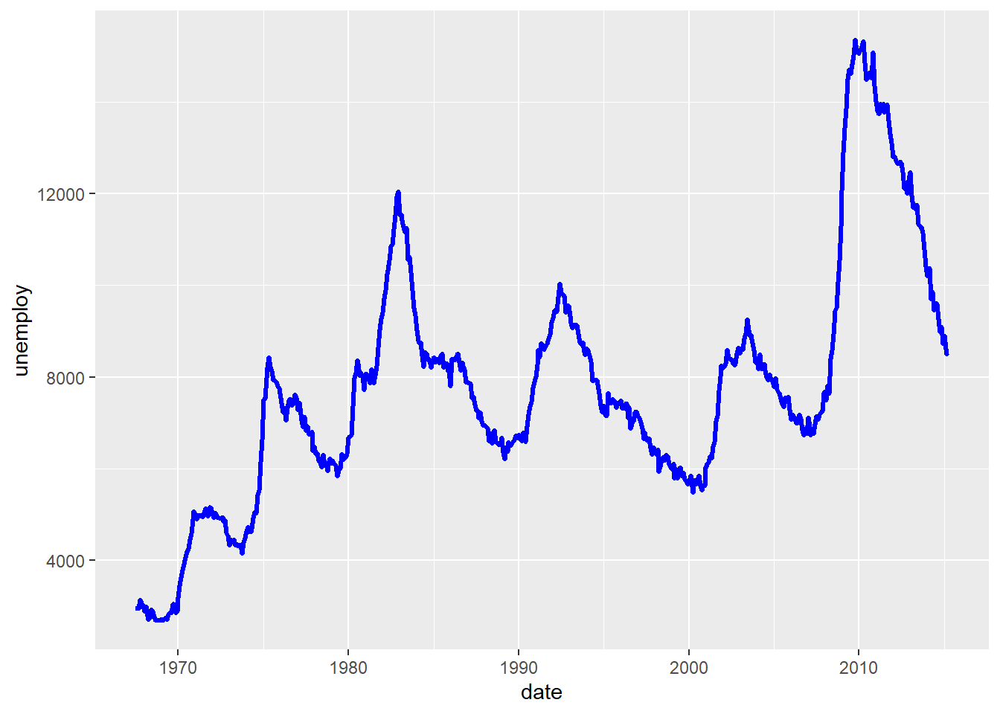
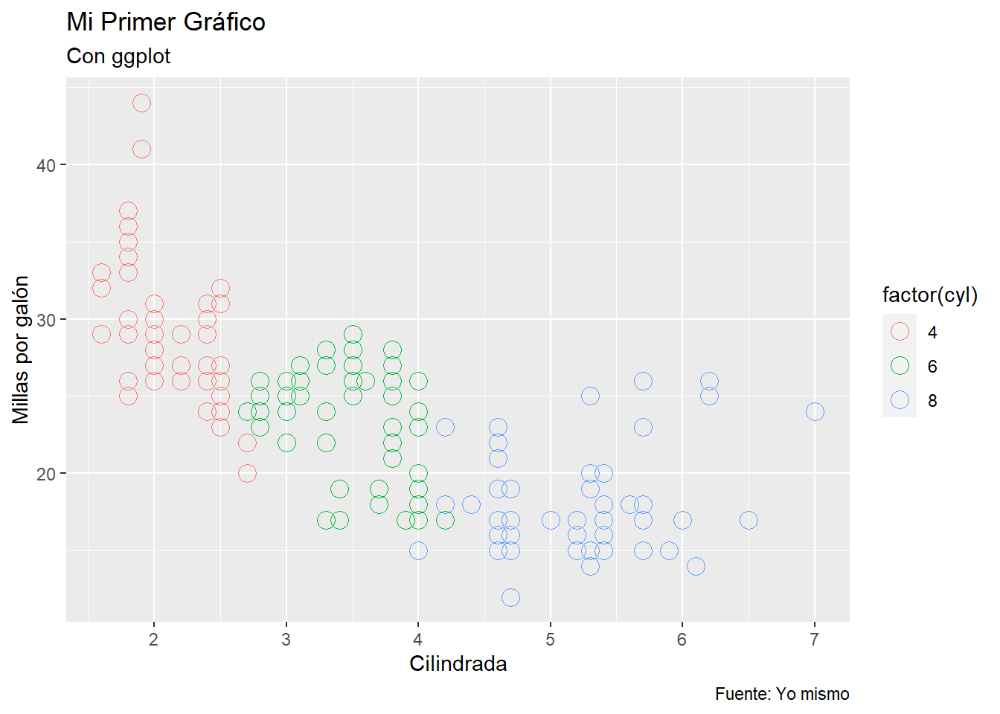

2 + 2[1] 45 - 3[1] 23 * 2[1] 66 / 3[1] 2The following definition is from the book Learning R de Richard Cotton:
“Just to confuse you, R refers to two things. There is R, the programming language, and R, the piece of software that you use to run programs written in R. Fortunately, most of the time it should be clear from the context which R is being referred to.”
“R (the language) was created in the early 1990s by Ross Ihaka and Robert Gentleman, then both working at the University of Auckland. It is based upon the S language that was developed at Bell Laboratories in the 1970s, primarily by John Chambers. R (the software) is a GNU project, reflecting its status as important free and open source software.”
Free and open source
Platform independent
Foster’s a reproducible workflow
Active community of users and programmers making R better
In this course we will use Rstudio.
Rstudio is an IDE (integrated development environment) that works as a graphical interface that facilitates the use of the R language.
You have a online version, Posit cloud
The following image and sentence is taken from the book Statistical Inference via Data Science: A ModernDive into R and the Tidyverse

“More precisely, R is a programming language that runs computations, while RStudio is an integrated development environment (IDE) that provides an interface by adding many convenient features and tools. So just as the way of having access to a speedometer, rearview mirrors, and a navigation system makes driving much easier, using RStudio’s interface makes using R much easier as well.”
There are alternatives to Rstudio, but Rstudio is the de facto R IDE for many.
An alternative that is gaining a lot of popularity is the well-known Visual Studio Code.
If you don’t want to use Rstudio, this would be the suggested alternative

Lower Right:
Upper Right:
Lower Left: Console
Upper Left: Text editor
Nice Features:
To keep all our files organised, including databases we load or graphics we create, we are going to work in what RStudio calls projects.
Essentially, a RStudio project is a folder or directory on your computer that contains all the elements of your project.

The use of projects in RStudio is a good practice that allows you to keep control of all the files used in a project.
Projects are often not only complex but also dynamic, and the management of all the elements that make up a project is often an essential part of the workflow.
Furthermore, the organisation into projects facilitates reproducibility.
For a more detailed discussion, read this section of this good book.
Next, we are going to introduce the basic handling of the working environment, such as defining variables, making comments to the code, etc. In this process, we will be introducing language concepts that we will be defining in a formal way later on.
To introduce us to the use of the editor and the command line of Rstudio, we will start with some very basic operations
2 + 2[1] 45 - 3[1] 23 * 2[1] 66 / 3[1] 2It is possible to apply standard association rules as well as operations beyond the basic ones (power, logarithm, etc.)
(5 + 3) / 4[1] 23^2[1] 9log(100, base = 10)[1] 25 %% 3[1] 2sqrt(9)[1] 3We can store values by assigning a name to them, so that we can access the value later.
x <- 4
x[1] 4y <- (5 + 3) / 4
y[1] 2You create variables, or create new objects with the <- operator. You can also do this in the more conventional way with = but this is not standard practice.
Employees <- 150
Employees[1] 150With names you have to respect certain conventions: they must start with a letter and can only contain letters, numbers, _ and ..
You are free to name variables as you like, but there are some rules of style, for example
i_use_snake_case
otherPeopleUseCamelCase
some.people.use.periods
What_EVer.I.wha_NT
New_analysts_January <- 5
New_analysts_February <- 3
Analysts <- New_analysts_January + New_analysts_February
Analysts[1] 8Comments are initiated with #
# Calculation of number of analysts
Analysts <- New_analysts_January + New_analysts_February
Analysts[1] 8Throughout the course we will talk about R runtime errors, but it is worth getting used to them, as they will always be with us üò¢, but they give us a guide to solve them üòä
## analyst_number_calculation
Analysts_update <- New_analysts_January + New_analysts_February + New_analysts_March
Analyst_updateLibraries or packages are perhaps the most commonly used elements in R for practical work.
A formal definition of a library from the book R Packages by Hadley Wickham and Jennifer Bryan is as follows:
“In R, the fundamental unit of shareable code is the package. A package bundles together code, data, documentation, and tests, and is easy to share with others. As of March 2023, there were over 19,000 packages available on the Comprehensive R Archive Network, or CRAN, the public clearing house for R packages”.
An R package is a way to share code in an organised way that expands the possibilities of R by extending its functionality.
Libraries are installed using the install.packages() command, and libraries are loaded with library().
install.packages(emoji)
library(emoji)In order to work with data, it is necessary to understand how data is stored in the computer by each programming language.
The structures that store numerical information, and the way they are accessed, differ from Python to R, or from R to other languages.
The most important family of variable types in R are vectors, which can be classified as either atomic or list.
The common data objects in R are:
The structure of atomic vectors is as follows:

Number <- 1.0 # (real, floating)
Integer <- 1
Character <- "ab"
Logical <- TRUE
Number[1] 1Integer[1] 1Character[1] "ab"Logical[1] TRUEBe careful when working with different types
Number + CharacterWhen we perform an operation with two different numeric types (real + integer), R forces (coerces) the result to the type with the highest precision, in this case the real type.
Sum <- Number + Integer
Sum[1] 2typeof(Sum)[1] "double"Several things here, we’ve had our first approximation to a function in R, a topic we’ll explore in more detail later. Like the intuitive idea we have of a function from high school mathematics, a function in R has an argument (variable in parentheses) and gives us a result.
In R, functions have their name followed by parentheses, where we place the argument variable(s): a_function(x).
The typeof() function tells us the type of the variable (numeric, integer or logical).
typeof(Number)[1] "double"typeof(Integer)[1] "double"typeof(Character)[1] "character"typeof(Logical)[1] "logical"There are also specific functions to determine whether a variable is of a specific type
is.numeric(Number)[1] TRUEis.integer(Integer) [1] FALSEis.character(Character)[1] TRUEis.logical(Logical)[1] TRUEWe see that R tells us that Integer is not an integer, to specify an integer we have to put a letter L at the end of the number
Integer_2 <- 1L
Integer_2[1] 1is.integer(Integer_2)[1] TRUEtypeof(Integer_2)[1] "integer"We are going to use R to analyse data and create statistical or algorithmic models from it.
Most data is represented in tables: spreadsheets, relational databases tables, .csv files, etc.
Most statistical models use as input data in table form.
The most commonly used objects for working with tables in R are data frames and other variants (tibble or data.tables for example).
Before understanding how to work with tables, let’s review the concept of vector, which is the basic type on which data frames are built.
What characterises a vector is that it can store only data of the same type.
vector_numeric <- c(1, 10, 49)
vector_character <- c("a", "b", "c")
vector_numeric[1] 1 10 49vector_character[1] "a" "b" "c"Vectors are one-dimensional arrays (row or column) that can store numbers, characters or logical variables.
As we have seen above, vectors are created with the c() command where the c stands for combine.
Be careful not to confuse this structure with vectors as elements of a vector space (more on this later).
vector_mixed <- c(1,2, "a")
vector_mixed[1] "1" "2" "a"In the previous example we wanted to create a vector with elements of different types, numeric and character. R has converted all the elements to character.
If there are characters in a vector R converts all the elements to character, if they are all numeric but of different types, R converts them to the type with the highest precision (double). What happens with logical vectors?
vector_mixed2 <- c(1,2,TRUE)
vector_mixed2[1] 1 2 1typeof(vector_mixed2)[1] "double"In this case R has converted the elements of the vector to numeric.
We observe something that later will be very useful, R has assigned to the logical variable TRUE the number 1. The variable FALSE has been assigned a zero.
Can we change a variable or a vector type? YES
vector_numeric[1] 1 10 49as.character(vector_numeric)[1] "1" "10" "49"logic_vector <- c(TRUE, FALSE)
logic_vector[1] TRUE FALSEas.numeric(logic_vector)[1] 1 0There are several functions in R that allow for changes of type
as.character(logic_vector)[1] "TRUE" "FALSE"There are a couple of other ways to create vectors
vector_1 <- 1:5
vector_2 <- seq(1,5)
vector_1[1] 1 2 3 4 5vector_2[1] 1 2 3 4 5where seq stands for sequence
Since in this course the data we will use is external and not generated by us, we will not go into the different ways of generating vectors. The following box elaborates in more detail on this topic and is optional, you can follow the rest of the lecture without reading it.
More complex sequences can be created with the seq() function.
vector_3 <- seq(1,10, by = 2)
vector_4 <- seq(1,10, length.out = 20)
vector_5 <- seq(1,10, along.with = vector_1)
vector_3[1] 1 3 5 7 9vector_4 [1] 1.000000 1.473684 1.947368 2.421053 2.894737 3.368421 3.842105
[8] 4.315789 4.789474 5.263158 5.736842 6.210526 6.684211 7.157895
[15] 7.631579 8.105263 8.578947 9.052632 9.526316 10.000000vector_5[1] 1.00 3.25 5.50 7.75 10.00Another command to generate sequences is rep.
repeated <- rep(4,10)
repeated [1] 4 4 4 4 4 4 4 4 4 4We can repeat not only a value but vectors
repeat_2 <- rep(1:4, 4)
repeat_2 [1] 1 2 3 4 1 2 3 4 1 2 3 4 1 2 3 4repeat_3 <- rep(1:4, each = 4)
repeat_3 [1] 1 1 1 1 2 2 2 2 3 3 3 3 4 4 4 4repeat_4 <- rep(1:4, each=2, times=2)
repeat_4 [1] 1 1 2 2 3 3 4 4 1 1 2 2 3 3 4 4repeat_5 <- rep(1:4, c(2,3,4,5))
repeat_5 [1] 1 1 2 2 2 3 3 3 3 4 4 4 4 4We can also create random vectors, i.e., realisations of a random variable from a given distribution
random_normal <- rnorm(10)
random_uniform <- runif(10)
random_normal [1] 0.458734097 -0.791811410 -1.093236871 0.005712865 -0.946869512
[6] 1.209432796 0.389010321 1.250471501 -0.938889095 0.262763652random_uniform [1] 0.9860380 0.9221407 0.4352323 0.4512699 0.5333578 0.6686487 0.8741746
[8] 0.4021351 0.8843127 0.1313069The elements of the vector can be assigned names
names(vector_1)NULLnames_vec <- c("one", "two", "three", "four", "five")
names(vector_1) <- names_vec
names(vector_1)[1] "one" "two" "three" "four" "five" Another characteristic of vectors besides their type, is their length or dimension, which we can determine with the length() function.
length(vector_1)[1] 5length(vector_4)[1] 20length(repeat_5)[1] 14Arithmetic operations can be performed with vectors
vector_1 one two three four five
1 2 3 4 5 vector_2[1] 1 2 3 4 5Vec_sum <- vector_1 +vector_2
Vec_sum one two three four five
2 4 6 8 10 vector_1 one two three four five
1 2 3 4 5 vector_2[1] 1 2 3 4 5Vec_product <- vector_1 * vector_2
Vec_product one two three four five
1 4 9 16 25 In this case, both vectors have the same dimension. What happens if the opposite is true?
vector_1 one two three four five
1 2 3 4 5 seq(6,15) [1] 6 7 8 9 10 11 12 13 14 15vector_1 + seq(6,15) [1] 7 9 11 13 15 12 14 16 18 20This peculiar behaviour is called recycling. Observe the result: what has R done in this case?
An operation is said to be vectorised if it can be applied to all elements of a vector.
vector_numeric[1] 1 10 49vector_numeric + 2[1] 3 12 51vector_numeric * 2[1] 2 20 98vector_numeric / 2[1] 0.5 5.0 24.5vector_numeric^2[1] 1 100 2401sqrt(vector_numeric)[1] 1.000000 3.162278 7.000000log(vector_numeric)[1] 0.000000 2.302585 3.891820We note that when an arithmetic operator (+, *, -, /, ^) is applied to a vector, the operation is performed on each of the elements of the vector. Similarly, when we apply a function (sqrt(), log()) it uses all the elements of the vector as arguments and its output is a vector of dimension equal to the dimension of the original vector.
It is possible to apply certain functions to analyse some characteristics of vectors.
Remember that the ultimate goal is to perform data analysis, some of these functions will be used on a regular basis when we want to inspect data in a table.
Basic statistics of a vector
summary(vector_4) Min. 1st Qu. Median Mean 3rd Qu. Max.
1.00 3.25 5.50 5.50 7.75 10.00 Values at the beginning and at the end
head(vector_4)[1] 1.000000 1.473684 1.947368 2.421053 2.894737 3.368421tail(vector_4)[1] 7.631579 8.105263 8.578947 9.052632 9.526316 10.000000It is possible to construct new vectors from a vector
vector_1 one two three four five
1 2 3 4 5 vector_square <- vector_1^2
vector_square one two three four five
1 4 9 16 25 How do we access the elements of a vector?
vector_square[1]one
1 vector_square[3]three
9 Several elements in a row (slice)
vector_square[1:3] one two three
1 4 9 vector_square[3:1]three two one
9 4 1 Non consecutive elements of a vector
vector_square[c(1,3)] one three
1 9 vector_square[c(3,1)]three one
9 1 All elements except some
vector_square[-c(1,3)] two four five
4 16 25 vector_square[-length(vector_square)] one two three four
1 4 9 16 All elements satisfying a condition
vector_5[1] 1.00 3.25 5.50 7.75 10.00vector_5[vector_5 < 5][1] 1.00 3.25vector_5[vector_5 > 5][1] 5.50 7.75 10.00The condition can be an equality
vector_5[vector_5 == 5.5][1] 5.5These conditions are very important for data analysis. Suppose you want to locate in a table with the financial data from a sample of bank costumers, those customers whose income is greater than 30,000 per year.
It is also useful to locate data and replace it with another value. Following the example above, replace the income column for customers whose annual income is less than 12,000 per year with zero, as we will not be working with that segment.
vector_5[1] 1.00 3.25 5.50 7.75 10.00vector_5[vector_5 < 5] <- 0
vector_5[1] 0.00 0.00 5.50 7.75 10.00In case the vectors have names, we can use these to select elements
vector_square["two"]two
4 vector_square[c("one", "three")] one three
1 9 More functions applied to vectors
vector_5 <- seq(1,10, along.with = vector_1)
vector_5[1] 1.00 3.25 5.50 7.75 10.00max(vector_5)[1] 10min(vector_5)[1] 1sum(vector_5)[1] 27.5prod(vector_5)[1] 1385.312So far we have been working with a one-dimensional data structure, but in data analysis we are sometimes interested in discovering or finding relationships between variables, so it is necessary to look at them as a whole in order to capture interrelationships.
In our particular case, we will represent subsets of the input output table as matrices, and apply linear algebra operations to them.
This forces us to have to work in more than one dimension, in R we can do that with matrices and arrays.
A matrix is nothing more than a two-dimensional structure that allows us to store homogeneous data. To construct a matrix we use the matrix() function
vector_6 <- seq(8)
vector_6[1] 1 2 3 4 5 6 7 8A <- matrix(vector_6)
A [,1]
[1,] 1
[2,] 2
[3,] 3
[4,] 4
[5,] 5
[6,] 6
[7,] 7
[8,] 8We have a one-column vector. What if we want more than one dimension?
A <- matrix(vector_6, nrow = 2)
A [,1] [,2] [,3] [,4]
[1,] 1 3 5 7
[2,] 2 4 6 8A <- matrix(vector_6, ncol = 2)
A [,1] [,2]
[1,] 1 5
[2,] 2 6
[3,] 3 7
[4,] 4 8A <- matrix(vector_6, nrow = 4, ncol = 2)
A [,1] [,2]
[1,] 1 5
[2,] 2 6
[3,] 3 7
[4,] 4 8We notice that the matrix is filled by columns, we can change that behaviour
A <- matrix(vector_6, nrow = 4, ncol = 2, byrow = TRUE)
A [,1] [,2]
[1,] 1 2
[2,] 3 4
[3,] 5 6
[4,] 7 8Just as we had the name attribute for vectors, we can also name the rows and columns of a matrix. To inspect the row names of a matrix we use rownames(), and the row names colnames().
rownames(A)NULLcolnames(A)NULLNULL indicates when an expression or function results in an undefined value. In this case it indicates that the array has no names. Let’s assign names to it by associating a vector of characters
rownames(A) <- c("row_1", "row_2", "row_3", "row_4")
colnames(A) <- c("column_1", "column_2")
rownames(A)[1] "row_1" "row_2" "row_3" "row_4"colnames(A)[1] "column_1" "column_2"A column_1 column_2
row_1 1 2
row_2 3 4
row_3 5 6
row_4 7 8`dimnames() is another way to inspect/assign the names of an array.
dimnames(A)[[1]]
[1] "row_1" "row_2" "row_3" "row_4"
[[2]]
[1] "column_1" "column_2"Is there anything strange about this structure? There are lists, a topic that we will not be covered in this course.
Accessing the elements of an array is very similar to the case of vectors, we just need to differentiate between dimensions with a comma ,.
A column_1 column_2
row_1 1 2
row_2 3 4
row_3 5 6
row_4 7 8A[1,1][1] 1A[3,2][1] 6A["row_2", "column_2"][1] 4A[1:2, 1]row_1 row_2
1 3 A[c("row_1", "row_4"), 2]row_1 row_4
2 8 One operation that is widely used in practice is to create a new table from another by binding rows and columns. This is done with the rbind() and cbind() functions.
If we want to add columns based on another matrix:
set.seed(125)
matrix_A <- matrix(data = runif(n = 8, min = 10, max = 50), nrow = 2, ncol = 4)
matrix_B <- matrix(data = runif(n = 2, min = 10, max = 50), nrow = 2, ncol = 1)
matrix_A [,1] [,2] [,3] [,4]
[1,] 42.98698 21.99122 48.60780 31.32369
[2,] 14.67404 24.26243 48.70242 23.28622matrix_B [,1]
[1,] 36.15375
[2,] 34.58198We combine both matrices
matrix_AB <- cbind(matrix_A, matrix_B)
matrix_AB [,1] [,2] [,3] [,4] [,5]
[1,] 42.98698 21.99122 48.60780 31.32369 36.15375
[2,] 14.67404 24.26243 48.70242 23.28622 34.58198If we want to add rows based on another matrix:
matrix_C <- matrix(data = runif(n = 5, min = 10, max = 50), nrow = 1, ncol = 5)
matrix_C [,1] [,2] [,3] [,4] [,5]
[1,] 10.56518 40.53518 24.37221 14.05403 32.27189matrix_ABC <- rbind(matrix_AB, matrix_C)
matrix_ABC [,1] [,2] [,3] [,4] [,5]
[1,] 42.98698 21.99122 48.60780 31.32369 36.15375
[2,] 14.67404 24.26243 48.70242 23.28622 34.58198
[3,] 10.56518 40.53518 24.37221 14.05403 32.27189As mentioned before, matrices are objects that can be manipulated as matrices in the sense of linear algebra. For example, we can calculate the transpose or the inverse of a matrix
Transpose
A column_1 column_2
row_1 1 2
row_2 3 4
row_3 5 6
row_4 7 8t(A) row_1 row_2 row_3 row_4
column_1 1 3 5 7
column_2 2 4 6 8Inverse
A column_1 column_2
row_1 1 2
row_2 3 4
row_3 5 6
row_4 7 8solve(A[1:2,1:2]) row_1 row_2
column_1 -2.0 1.0
column_2 1.5 -0.5Diagonal
vector_diagonal <- c(1,2,3,4)
diag(vector_diagonal) [,1] [,2] [,3] [,4]
[1,] 1 0 0 0
[2,] 0 2 0 0
[3,] 0 0 3 0
[4,] 0 0 0 4In this case
diag(4) [,1] [,2] [,3] [,4]
[1,] 1 0 0 0
[2,] 0 1 0 0
[3,] 0 0 1 0
[4,] 0 0 0 1The diag(n) command generates a square diagonal matrix of ones whit dimension n
The %*% operator performs products of matrices, as we will see in the practical examples
Use the help to determine what the following linear algebra functions do
det(), svd(), eigen(), qr(), chol()
The data.frame will be one of the most commonly used objects in R for data analysis.
Data frames are tables or rectangular arrays, we can treat them as if they were an Excel sheet in which we organise the data we want to analyse.
As in Excel, we can do calculations with the tables, create new columns (variables), perform statistical analysis, etc.
In general, we usually inspect the data in a table to familiarise ourselves with it and see what kind of analysis we can do with it.
Let’s use one of the datasets that already comes with the basic R installation, mtcars.
We can view a user friendly version of the table in RStudio
mtcars mpg cyl disp hp drat wt qsec vs am gear carb
Mazda RX4 21.0 6 160.0 110 3.90 2.620 16.46 0 1 4 4
Mazda RX4 Wag 21.0 6 160.0 110 3.90 2.875 17.02 0 1 4 4
Datsun 710 22.8 4 108.0 93 3.85 2.320 18.61 1 1 4 1
Hornet 4 Drive 21.4 6 258.0 110 3.08 3.215 19.44 1 0 3 1
Hornet Sportabout 18.7 8 360.0 175 3.15 3.440 17.02 0 0 3 2
Valiant 18.1 6 225.0 105 2.76 3.460 20.22 1 0 3 1
Duster 360 14.3 8 360.0 245 3.21 3.570 15.84 0 0 3 4
Merc 240D 24.4 4 146.7 62 3.69 3.190 20.00 1 0 4 2
Merc 230 22.8 4 140.8 95 3.92 3.150 22.90 1 0 4 2
Merc 280 19.2 6 167.6 123 3.92 3.440 18.30 1 0 4 4
Merc 280C 17.8 6 167.6 123 3.92 3.440 18.90 1 0 4 4
Merc 450SE 16.4 8 275.8 180 3.07 4.070 17.40 0 0 3 3
Merc 450SL 17.3 8 275.8 180 3.07 3.730 17.60 0 0 3 3
Merc 450SLC 15.2 8 275.8 180 3.07 3.780 18.00 0 0 3 3
Cadillac Fleetwood 10.4 8 472.0 205 2.93 5.250 17.98 0 0 3 4
Lincoln Continental 10.4 8 460.0 215 3.00 5.424 17.82 0 0 3 4
Chrysler Imperial 14.7 8 440.0 230 3.23 5.345 17.42 0 0 3 4
Fiat 128 32.4 4 78.7 66 4.08 2.200 19.47 1 1 4 1
Honda Civic 30.4 4 75.7 52 4.93 1.615 18.52 1 1 4 2
Toyota Corolla 33.9 4 71.1 65 4.22 1.835 19.90 1 1 4 1
Toyota Corona 21.5 4 120.1 97 3.70 2.465 20.01 1 0 3 1
Dodge Challenger 15.5 8 318.0 150 2.76 3.520 16.87 0 0 3 2
AMC Javelin 15.2 8 304.0 150 3.15 3.435 17.30 0 0 3 2
Camaro Z28 13.3 8 350.0 245 3.73 3.840 15.41 0 0 3 4
Pontiac Firebird 19.2 8 400.0 175 3.08 3.845 17.05 0 0 3 2
Fiat X1-9 27.3 4 79.0 66 4.08 1.935 18.90 1 1 4 1
Porsche 914-2 26.0 4 120.3 91 4.43 2.140 16.70 0 1 5 2
Lotus Europa 30.4 4 95.1 113 3.77 1.513 16.90 1 1 5 2
Ford Pantera L 15.8 8 351.0 264 4.22 3.170 14.50 0 1 5 4
Ferrari Dino 19.7 6 145.0 175 3.62 2.770 15.50 0 1 5 6
Maserati Bora 15.0 8 301.0 335 3.54 3.570 14.60 0 1 5 8
Volvo 142E 21.4 4 121.0 109 4.11 2.780 18.60 1 1 4 2There are several ways to take a quick look at the data without having to view the whole table.
For example we can see the first 6 rows
head(mtcars) mpg cyl disp hp drat wt qsec vs am gear carb
Mazda RX4 21.0 6 160 110 3.90 2.620 16.46 0 1 4 4
Mazda RX4 Wag 21.0 6 160 110 3.90 2.875 17.02 0 1 4 4
Datsun 710 22.8 4 108 93 3.85 2.320 18.61 1 1 4 1
Hornet 4 Drive 21.4 6 258 110 3.08 3.215 19.44 1 0 3 1
Hornet Sportabout 18.7 8 360 175 3.15 3.440 17.02 0 0 3 2
Valiant 18.1 6 225 105 2.76 3.460 20.22 1 0 3 1Or the last 6
tail(mtcars) mpg cyl disp hp drat wt qsec vs am gear carb
Porsche 914-2 26.0 4 120.3 91 4.43 2.140 16.7 0 1 5 2
Lotus Europa 30.4 4 95.1 113 3.77 1.513 16.9 1 1 5 2
Ford Pantera L 15.8 8 351.0 264 4.22 3.170 14.5 0 1 5 4
Ferrari Dino 19.7 6 145.0 175 3.62 2.770 15.5 0 1 5 6
Maserati Bora 15.0 8 301.0 335 3.54 3.570 14.6 0 1 5 8
Volvo 142E 21.4 4 121.0 109 4.11 2.780 18.6 1 1 4 2If instead of 6, we want to see a certain number of rows, we simply tell the head and tail functions to do so
head(mtcars, n = 3) mpg cyl disp hp drat wt qsec vs am gear carb
Mazda RX4 21.0 6 160 110 3.90 2.620 16.46 0 1 4 4
Mazda RX4 Wag 21.0 6 160 110 3.90 2.875 17.02 0 1 4 4
Datsun 710 22.8 4 108 93 3.85 2.320 18.61 1 1 4 1tail(mtcars, n = 2) mpg cyl disp hp drat wt qsec vs am gear carb
Maserati Bora 15.0 8 301 335 3.54 3.57 14.6 0 1 5 8
Volvo 142E 21.4 4 121 109 4.11 2.78 18.6 1 1 4 2Sometimes we use very large tables that store many variables, in this case before displaying even a fraction of the table, it is useful to inspect the column names of the data frame
colnames(mtcars) [1] "mpg" "cyl" "disp" "hp" "drat" "wt" "qsec" "vs" "am" "gear"
[11] "carb"In general, in order to determine how many variables and how many observations we have, we use the dim function, which gives the number of columns and rows in the table
dim(mtcars)[1] 32 11We can see the number of rows and columns separately with nrow and ncol.
ncol(mtcars)[1] 11nrow(mtcars)[1] 32Another way is to use the str function. Although it is not intuitive and even intimidating at first glance, it is not that complicated and provides useful information.
str(mtcars)'data.frame': 32 obs. of 11 variables:
$ mpg : num 21 21 22.8 21.4 18.7 18.1 14.3 24.4 22.8 19.2 ...
$ cyl : num 6 6 4 6 8 6 8 4 4 6 ...
$ disp: num 160 160 108 258 360 ...
$ hp : num 110 110 93 110 175 105 245 62 95 123 ...
$ drat: num 3.9 3.9 3.85 3.08 3.15 2.76 3.21 3.69 3.92 3.92 ...
$ wt : num 2.62 2.88 2.32 3.21 3.44 ...
$ qsec: num 16.5 17 18.6 19.4 17 ...
$ vs : num 0 0 1 1 0 1 0 1 1 1 ...
$ am : num 1 1 1 0 0 0 0 0 0 0 ...
$ gear: num 4 4 4 3 3 3 3 4 4 4 ...
$ carb: num 4 4 1 1 2 1 4 2 2 4 ...A version that provides statistical information is summary.
summary(mtcars) mpg cyl disp hp
Min. :10.40 Min. :4.000 Min. : 71.1 Min. : 52.0
1st Qu.:15.43 1st Qu.:4.000 1st Qu.:120.8 1st Qu.: 96.5
Median :19.20 Median :6.000 Median :196.3 Median :123.0
Mean :20.09 Mean :6.188 Mean :230.7 Mean :146.7
3rd Qu.:22.80 3rd Qu.:8.000 3rd Qu.:326.0 3rd Qu.:180.0
Max. :33.90 Max. :8.000 Max. :472.0 Max. :335.0
drat wt qsec vs
Min. :2.760 Min. :1.513 Min. :14.50 Min. :0.0000
1st Qu.:3.080 1st Qu.:2.581 1st Qu.:16.89 1st Qu.:0.0000
Median :3.695 Median :3.325 Median :17.71 Median :0.0000
Mean :3.597 Mean :3.217 Mean :17.85 Mean :0.4375
3rd Qu.:3.920 3rd Qu.:3.610 3rd Qu.:18.90 3rd Qu.:1.0000
Max. :4.930 Max. :5.424 Max. :22.90 Max. :1.0000
am gear carb
Min. :0.0000 Min. :3.000 Min. :1.000
1st Qu.:0.0000 1st Qu.:3.000 1st Qu.:2.000
Median :0.0000 Median :4.000 Median :2.000
Mean :0.4062 Mean :3.688 Mean :2.812
3rd Qu.:1.0000 3rd Qu.:4.000 3rd Qu.:4.000
Max. :1.0000 Max. :5.000 Max. :8.000 Now that we have our data in a data frame, the next step is to access subsets of data in the table (a column or group of rows that meet a condition), manipulate it and create new variables.
We can access the data in the data frame in the same way as we did with vectors, data frames are a kind of set of vectors.
Remember that we could access elements of vectors by position or name
mtcars[1,2][1] 6mtcars[1,4][1] 110In the first case we tell R that we want it to show us the data of the first row and the second column, in the second case the data of the first row and the fourth column.
In the case that we want to see a specific column or row, we leave one of the dimensions blank.
If we want to access the information of the second row
mtcars[2, ] mpg cyl disp hp drat wt qsec vs am gear carb
Mazda RX4 Wag 21 6 160 110 3.9 2.875 17.02 0 1 4 4If we want to access the information in the fourth column
mtcars[ , 4] [1] 110 110 93 110 175 105 245 62 95 123 123 180 180 180 205 215 230 66 52
[20] 65 97 150 150 245 175 66 91 113 264 175 335 109We can also get the information per column using the column name
mtcars[ , "cyl"] [1] 6 6 4 6 8 6 8 4 4 6 6 8 8 8 8 8 8 4 4 4 4 8 8 8 8 4 4 4 8 6 8 4Likewise, we can inspect a data frame column by typing the data frame name followed by a $ sign and the column name.
The advantage of this method is that the column names are autocompleted
mtcars$cyl [1] 6 6 4 6 8 6 8 4 4 6 6 8 8 8 8 8 8 4 4 4 4 8 8 8 8 4 4 4 8 6 8 4With position, like vectors, we can access sets of rows and columns (slices).
For example, if we want to keep only the first 3 rows and the fourth and fifth columns, we can access the following position sets
mtcars[1:3, 4:5] hp drat
Mazda RX4 110 3.90
Mazda RX4 Wag 110 3.90
Datsun 710 93 3.85We can build a new table from this sub-table, assigning a name to the latter
mtcars_peque <- mtcars[1:3, 4:5]
mtcars_peque hp drat
Mazda RX4 110 3.90
Mazda RX4 Wag 110 3.90
Datsun 710 93 3.85Sub-table with first 10 rows only
mtcars[1:10, ] mpg cyl disp hp drat wt qsec vs am gear carb
Mazda RX4 21.0 6 160.0 110 3.90 2.620 16.46 0 1 4 4
Mazda RX4 Wag 21.0 6 160.0 110 3.90 2.875 17.02 0 1 4 4
Datsun 710 22.8 4 108.0 93 3.85 2.320 18.61 1 1 4 1
Hornet 4 Drive 21.4 6 258.0 110 3.08 3.215 19.44 1 0 3 1
Hornet Sportabout 18.7 8 360.0 175 3.15 3.440 17.02 0 0 3 2
Valiant 18.1 6 225.0 105 2.76 3.460 20.22 1 0 3 1
Duster 360 14.3 8 360.0 245 3.21 3.570 15.84 0 0 3 4
Merc 240D 24.4 4 146.7 62 3.69 3.190 20.00 1 0 4 2
Merc 230 22.8 4 140.8 95 3.92 3.150 22.90 1 0 4 2
Merc 280 19.2 6 167.6 123 3.92 3.440 18.30 1 0 4 4Sub-table with last 2 columns only
mtcars[, 4:5] hp drat
Mazda RX4 110 3.90
Mazda RX4 Wag 110 3.90
Datsun 710 93 3.85
Hornet 4 Drive 110 3.08
Hornet Sportabout 175 3.15
Valiant 105 2.76
Duster 360 245 3.21
Merc 240D 62 3.69
Merc 230 95 3.92
Merc 280 123 3.92
Merc 280C 123 3.92
Merc 450SE 180 3.07
Merc 450SL 180 3.07
Merc 450SLC 180 3.07
Cadillac Fleetwood 205 2.93
Lincoln Continental 215 3.00
Chrysler Imperial 230 3.23
Fiat 128 66 4.08
Honda Civic 52 4.93
Toyota Corolla 65 4.22
Toyota Corona 97 3.70
Dodge Challenger 150 2.76
AMC Javelin 150 3.15
Camaro Z28 245 3.73
Pontiac Firebird 175 3.08
Fiat X1-9 66 4.08
Porsche 914-2 91 4.43
Lotus Europa 113 3.77
Ford Pantera L 264 4.22
Ferrari Dino 175 3.62
Maserati Bora 335 3.54
Volvo 142E 109 4.11We can select data with criteria based on meeting a condition
mtcars[mtcars$cyl > 4 , ] mpg cyl disp hp drat wt qsec vs am gear carb
Mazda RX4 21.0 6 160.0 110 3.90 2.620 16.46 0 1 4 4
Mazda RX4 Wag 21.0 6 160.0 110 3.90 2.875 17.02 0 1 4 4
Hornet 4 Drive 21.4 6 258.0 110 3.08 3.215 19.44 1 0 3 1
Hornet Sportabout 18.7 8 360.0 175 3.15 3.440 17.02 0 0 3 2
Valiant 18.1 6 225.0 105 2.76 3.460 20.22 1 0 3 1
Duster 360 14.3 8 360.0 245 3.21 3.570 15.84 0 0 3 4
Merc 280 19.2 6 167.6 123 3.92 3.440 18.30 1 0 4 4
Merc 280C 17.8 6 167.6 123 3.92 3.440 18.90 1 0 4 4
Merc 450SE 16.4 8 275.8 180 3.07 4.070 17.40 0 0 3 3
Merc 450SL 17.3 8 275.8 180 3.07 3.730 17.60 0 0 3 3
Merc 450SLC 15.2 8 275.8 180 3.07 3.780 18.00 0 0 3 3
Cadillac Fleetwood 10.4 8 472.0 205 2.93 5.250 17.98 0 0 3 4
Lincoln Continental 10.4 8 460.0 215 3.00 5.424 17.82 0 0 3 4
Chrysler Imperial 14.7 8 440.0 230 3.23 5.345 17.42 0 0 3 4
Dodge Challenger 15.5 8 318.0 150 2.76 3.520 16.87 0 0 3 2
AMC Javelin 15.2 8 304.0 150 3.15 3.435 17.30 0 0 3 2
Camaro Z28 13.3 8 350.0 245 3.73 3.840 15.41 0 0 3 4
Pontiac Firebird 19.2 8 400.0 175 3.08 3.845 17.05 0 0 3 2
Ford Pantera L 15.8 8 351.0 264 4.22 3.170 14.50 0 1 5 4
Ferrari Dino 19.7 6 145.0 175 3.62 2.770 15.50 0 1 5 6
Maserati Bora 15.0 8 301.0 335 3.54 3.570 14.60 0 1 5 8mtcars[mtcars$cyl == 6 , ] mpg cyl disp hp drat wt qsec vs am gear carb
Mazda RX4 21.0 6 160.0 110 3.90 2.620 16.46 0 1 4 4
Mazda RX4 Wag 21.0 6 160.0 110 3.90 2.875 17.02 0 1 4 4
Hornet 4 Drive 21.4 6 258.0 110 3.08 3.215 19.44 1 0 3 1
Valiant 18.1 6 225.0 105 2.76 3.460 20.22 1 0 3 1
Merc 280 19.2 6 167.6 123 3.92 3.440 18.30 1 0 4 4
Merc 280C 17.8 6 167.6 123 3.92 3.440 18.90 1 0 4 4
Ferrari Dino 19.7 6 145.0 175 3.62 2.770 15.50 0 1 5 6We can complicate it
mtcars[mtcars$cyl == 6 & mtcars$mpg > 18, ] mpg cyl disp hp drat wt qsec vs am gear carb
Mazda RX4 21.0 6 160.0 110 3.90 2.620 16.46 0 1 4 4
Mazda RX4 Wag 21.0 6 160.0 110 3.90 2.875 17.02 0 1 4 4
Hornet 4 Drive 21.4 6 258.0 110 3.08 3.215 19.44 1 0 3 1
Valiant 18.1 6 225.0 105 2.76 3.460 20.22 1 0 3 1
Merc 280 19.2 6 167.6 123 3.92 3.440 18.30 1 0 4 4
Ferrari Dino 19.7 6 145.0 175 3.62 2.770 15.50 0 1 5 6We have asked R to show us the data in the table corresponding to cars with 6 cylinders and miles per gallon greater that 18.
Both conditions are fulfilled at the same time.
In case you need that only one of the condition holds:
mtcars[mtcars$cyl == 6 | mtcars$mpg > 18, ] mpg cyl disp hp drat wt qsec vs am gear carb
Mazda RX4 21.0 6 160.0 110 3.90 2.620 16.46 0 1 4 4
Mazda RX4 Wag 21.0 6 160.0 110 3.90 2.875 17.02 0 1 4 4
Datsun 710 22.8 4 108.0 93 3.85 2.320 18.61 1 1 4 1
Hornet 4 Drive 21.4 6 258.0 110 3.08 3.215 19.44 1 0 3 1
Hornet Sportabout 18.7 8 360.0 175 3.15 3.440 17.02 0 0 3 2
Valiant 18.1 6 225.0 105 2.76 3.460 20.22 1 0 3 1
Merc 240D 24.4 4 146.7 62 3.69 3.190 20.00 1 0 4 2
Merc 230 22.8 4 140.8 95 3.92 3.150 22.90 1 0 4 2
Merc 280 19.2 6 167.6 123 3.92 3.440 18.30 1 0 4 4
Merc 280C 17.8 6 167.6 123 3.92 3.440 18.90 1 0 4 4
Fiat 128 32.4 4 78.7 66 4.08 2.200 19.47 1 1 4 1
Honda Civic 30.4 4 75.7 52 4.93 1.615 18.52 1 1 4 2
Toyota Corolla 33.9 4 71.1 65 4.22 1.835 19.90 1 1 4 1
Toyota Corona 21.5 4 120.1 97 3.70 2.465 20.01 1 0 3 1
Pontiac Firebird 19.2 8 400.0 175 3.08 3.845 17.05 0 0 3 2
Fiat X1-9 27.3 4 79.0 66 4.08 1.935 18.90 1 1 4 1
Porsche 914-2 26.0 4 120.3 91 4.43 2.140 16.70 0 1 5 2
Lotus Europa 30.4 4 95.1 113 3.77 1.513 16.90 1 1 5 2
Ferrari Dino 19.7 6 145.0 175 3.62 2.770 15.50 0 1 5 6
Volvo 142E 21.4 4 121.0 109 4.11 2.780 18.60 1 1 4 2As mentioned earlier, instead of generating the data we will be analysing, we typically obtain the data from external sources. In our case, the input-output tables are generated by the national statistical institutes.
These tables are shared in various formats, such as Excel or flat files (mainly csv). It is advisable to prioritize the use of flat files.
Similarly, we will also want to save the data generated in R in a format that can be read in other platforms, such as Excel.
In this presentation we will focus on two formats: Excel and csv.
The R base function for reading csv files is read.csv().
We need to provide the function with the file’s location path.
mtcars_csv <- read.csv(file = "mtcars.csv")
head(mtcars_csv)Inspecting the function, we can find additional arguments. Let us explore them using the tab button.
In practice, we typically use the arguments header, sep and dec
Base R does not have a function to read Excel files, so we must rely on a library. The most common choice is the readxl package.
Once we load the library, we will use the function read_excel()
library(readxl)
mtcars_excel <- read_excel("mtcars.xlsx")
head(mtcars_excel)In the practice section, we will use some of the other arguments of the read_excel() function. It’s worth mentioning the skip argument, which is used if we don’t wish to read the first n lines of an Excel file.
Unsurprisingly, we write data from R using the functions write.csv() and write_xlsx()
We must provide both functions with the object (data frame) we wish to save and the file path.
write.csv(x = airquality, file = "my_airquality.csv")
library(writexl)
write_xlsx(x = airquality, path = "my_airquality.xlsx")Los data frames son una estructura extremadamente útil, con la gran ventaja de que forma parte del ecosistema de R base (no depende de librería elaboradas por terceros). Pero, lo anterior también representa también una restricción, por lo que se han desarrollado librerías que complementan las propiedades de los data frames

La principal referencia de este apartado va a ser este capítulo del libro R for Data Science (acá en español)
En esta primera parte de la exposición nos concentraremos en el paquete dplyr y en la manipulación de datos, e introduciremos el pipe de la librería magrittr

En su página web, se presenta la librería dplyr como “dplyr es una gramática de manipulación de datos, que proporciona un conjunto coherente de verbos que ayudan a resolver los problemas más comunes de manipulación de datos”
Otra definición se puede ver en este texto de Carlos Gil Bellosta
El “conjunto de verbos” es el siguiente:
mutate() añade nuevas variables que son funciones de variables existentesselect() selecciona variables basándose en sus nombresfilter() selecciona casos basándose en sus valoressummarise() reduce múltiples valores a un único resumenarrange() cambia el orden de las filas.Al ser una librería desarrollada por terceros, hay que instalar la librería (se hace una sola vez) y cargarla
install.packages("dplyr")
library(dplyr)Vamos a trabajar con el conjunto de datos starwars
starwars# A tibble: 87 x 14
name height mass hair_color skin_color eye_color birth_year sex gender
<chr> <int> <dbl> <chr> <chr> <chr> <dbl> <chr> <chr>
1 Luke Sk~ 172 77 blond fair blue 19 male mascu~
2 C-3PO 167 75 <NA> gold yellow 112 none mascu~
3 R2-D2 96 32 <NA> white, bl~ red 33 none mascu~
4 Darth V~ 202 136 none white yellow 41.9 male mascu~
5 Leia Or~ 150 49 brown light brown 19 fema~ femin~
6 Owen La~ 178 120 brown, gr~ light blue 52 male mascu~
7 Beru Wh~ 165 75 brown light blue 47 fema~ femin~
8 R5-D4 97 32 <NA> white, red red NA none mascu~
9 Biggs D~ 183 84 black light brown 24 male mascu~
10 Obi-Wan~ 182 77 auburn, w~ fair blue-gray 57 male mascu~
# i 77 more rows
# i 5 more variables: homeworld <chr>, species <chr>, films <list>,
# vehicles <list>, starships <list>Observen que nuestro data frame ha cambiado de nombre, ahora es un tibble. Leer este capítulo del libro para una exposición detallada.
Inspeccionamos el data frame (si, el tibble sigue siendo un data frame) con glimpse
glimpse(starwars)Rows: 87
Columns: 14
$ name <chr> "Luke Skywalker", "C-3PO", "R2-D2", "Darth Vader", "Leia Or~
$ height <int> 172, 167, 96, 202, 150, 178, 165, 97, 183, 182, 188, 180, 2~
$ mass <dbl> 77.0, 75.0, 32.0, 136.0, 49.0, 120.0, 75.0, 32.0, 84.0, 77.~
$ hair_color <chr> "blond", NA, NA, "none", "brown", "brown, grey", "brown", N~
$ skin_color <chr> "fair", "gold", "white, blue", "white", "light", "light", "~
$ eye_color <chr> "blue", "yellow", "red", "yellow", "brown", "blue", "blue",~
$ birth_year <dbl> 19.0, 112.0, 33.0, 41.9, 19.0, 52.0, 47.0, NA, 24.0, 57.0, ~
$ sex <chr> "male", "none", "none", "male", "female", "male", "female",~
$ gender <chr> "masculine", "masculine", "masculine", "masculine", "femini~
$ homeworld <chr> "Tatooine", "Tatooine", "Naboo", "Tatooine", "Alderaan", "T~
$ species <chr> "Human", "Droid", "Droid", "Human", "Human", "Human", "Huma~
$ films <list> <"A New Hope", "The Empire Strikes Back", "Return of the J~
$ vehicles <list> <"Snowspeeder", "Imperial Speeder Bike">, <>, <>, <>, "Imp~
$ starships <list> <"X-wing", "Imperial shuttle">, <>, <>, "TIE Advanced x1",~Antes de continuar, es mejor presentar ya el pipe de magrittr. Empezaremos con un ejemplo simple en el cual deseamos calcular el logaritmo de la raíz cuadrada de la sumatoria de una secuencia de 20 realizaciones de una distribución uniforme.
Los pasos serían los siguientes:
runif(20)sum(runif(20)))sqrt(sum(runif(20)))log(sqrt(sum(runif(20))))set.seed(356)
log(sqrt(sum(runif(20))))[1] 1.257018La función es algo complicada de leer, y se complica su lectura a medida que añadimos más funciones.
El pipe (tubería) de magrittr %>% parte de la misma idea que el pipe de bash |, pasar el output de la salida de una función a otra función de manera encadenada.
Una manera “limpia” de ejecutar varios verbos de manera secuencial es a través del uso del pipe
Según su web, dicha herramienta permite hacer nuestro código más legible por las siguientes razones:
estructurando secuencias de operaciones de datos de izquierda a derecha (en lugar de dentro a fuera)
evitando las llamadas a funciones anidadas
minimizando la necesidad de variables locales y definiciones de funciones
facilitar añadir pasos en cualquier punto de la secuencia de operaciones
La operación anterior quedaría de la siguiente forma con pipes:
set.seed(356)
runif(20) %>%
sum() %>%
sqrt() %>%
log()[1] 1.257018Lo cual, es más natural y fácil de leer. Vamos a aplicar este encadenamiento de funciones con el pipe de manera intensiva con dplyr
Vamos a seleccionar filas que cumplan una determinada condición, esto se hace con el verbo filter()
Por ejemplo, nos quedamos solo con los personajes de Star Wars que son de Tatooine
starwars %>%
dplyr::filter(homeworld == "Tatooine")# A tibble: 10 x 14
name height mass hair_color skin_color eye_color birth_year sex gender
<chr> <int> <dbl> <chr> <chr> <chr> <dbl> <chr> <chr>
1 Luke Sk~ 172 77 blond fair blue 19 male mascu~
2 C-3PO 167 75 <NA> gold yellow 112 none mascu~
3 Darth V~ 202 136 none white yellow 41.9 male mascu~
4 Owen La~ 178 120 brown, gr~ light blue 52 male mascu~
5 Beru Wh~ 165 75 brown light blue 47 fema~ femin~
6 R5-D4 97 32 <NA> white, red red NA none mascu~
7 Biggs D~ 183 84 black light brown 24 male mascu~
8 Anakin ~ 188 84 blond fair blue 41.9 male mascu~
9 Shmi Sk~ 163 NA black fair brown 72 fema~ femin~
10 Cliegg ~ 183 NA brown fair blue 82 male mascu~
# i 5 more variables: homeworld <chr>, species <chr>, films <list>,
# vehicles <list>, starships <list>O que viva en Tatooine y sean de género masculino
starwars %>%
dplyr::filter(homeworld == "Tatooine" & gender == "masculine") # A tibble: 8 x 14
name height mass hair_color skin_color eye_color birth_year sex gender
<chr> <int> <dbl> <chr> <chr> <chr> <dbl> <chr> <chr>
1 Luke Sky~ 172 77 blond fair blue 19 male mascu~
2 C-3PO 167 75 <NA> gold yellow 112 none mascu~
3 Darth Va~ 202 136 none white yellow 41.9 male mascu~
4 Owen Lars 178 120 brown, gr~ light blue 52 male mascu~
5 R5-D4 97 32 <NA> white, red red NA none mascu~
6 Biggs Da~ 183 84 black light brown 24 male mascu~
7 Anakin S~ 188 84 blond fair blue 41.9 male mascu~
8 Cliegg L~ 183 NA brown fair blue 82 male mascu~
# i 5 more variables: homeworld <chr>, species <chr>, films <list>,
# vehicles <list>, starships <list>O queremos quedarnos con aquellos registros que no sean humanos
starwars |>
dplyr::filter(species != "Human")# A tibble: 48 x 14
name height mass hair_color skin_color eye_color birth_year sex gender
<chr> <int> <dbl> <chr> <chr> <chr> <dbl> <chr> <chr>
1 C-3PO 167 75 <NA> gold yellow 112 none mascu~
2 R2-D2 96 32 <NA> white, bl~ red 33 none mascu~
3 R5-D4 97 32 <NA> white, red red NA none mascu~
4 Chewbac~ 228 112 brown unknown blue 200 male mascu~
5 Greedo 173 74 <NA> green black 44 male mascu~
6 Jabba D~ 175 1358 <NA> green-tan~ orange 600 herm~ mascu~
7 Yoda 66 17 white green brown 896 male mascu~
8 IG-88 200 140 none metal red 15 none mascu~
9 Bossk 190 113 none green red 53 male mascu~
10 Ackbar 180 83 none brown mot~ orange 41 male mascu~
# i 38 more rows
# i 5 more variables: homeworld <chr>, species <chr>, films <list>,
# vehicles <list>, starships <list>Si lo que deseamos es seleccionar columnas, usamos el verbo select()
Siguiendo con el primer ejemplo, queremos saber que personajes de Star Wars son de Tatooine, pero solo queremos ver la columna del nombre del personaje
starwars %>%
dplyr::filter(homeworld == "Tatooine") %>%
select(name)# A tibble: 10 x 1
name
<chr>
1 Luke Skywalker
2 C-3PO
3 Darth Vader
4 Owen Lars
5 Beru Whitesun Lars
6 R5-D4
7 Biggs Darklighter
8 Anakin Skywalker
9 Shmi Skywalker
10 Cliegg Lars Además del nombre, queremos saber su altura y la especie
starwars %>%
dplyr::filter(homeworld == "Tatooine") %>%
select(name, height, species)# A tibble: 10 x 3
name height species
<chr> <int> <chr>
1 Luke Skywalker 172 Human
2 C-3PO 167 Droid
3 Darth Vader 202 Human
4 Owen Lars 178 Human
5 Beru Whitesun Lars 165 Human
6 R5-D4 97 Droid
7 Biggs Darklighter 183 Human
8 Anakin Skywalker 188 Human
9 Shmi Skywalker 163 Human
10 Cliegg Lars 183 Human Supongamos que no sabemos de antemano, cuantos tipos de especies hay, y deseamos saberlo para aplicar los filtros adecuados. En R base tendríamos que extraer la columna y usar la función unique() (unique(starwars$species)). En dplyr tenemos la función distinct()
starwars |>
select(species) |>
distinct()# A tibble: 38 x 1
species
<chr>
1 Human
2 Droid
3 Wookiee
4 Rodian
5 Hutt
6 <NA>
7 Yoda's species
8 Trandoshan
9 Mon Calamari
10 Ewok
# i 28 more rowsSi queremos contar cuantos registros hay por especie, usamos la función count()
starwars |>
count(species)# A tibble: 38 x 2
species n
<chr> <int>
1 Aleena 1
2 Besalisk 1
3 Cerean 1
4 Chagrian 1
5 Clawdite 1
6 Droid 6
7 Dug 1
8 Ewok 1
9 Geonosian 1
10 Gungan 3
# i 28 more rowsSi deseamos que presente la información en orden descendente
starwars |>
count(species, sort = TRUE)# A tibble: 38 x 2
species n
<chr> <int>
1 Human 35
2 Droid 6
3 <NA> 4
4 Gungan 3
5 Kaminoan 2
6 Mirialan 2
7 Twi'lek 2
8 Wookiee 2
9 Zabrak 2
10 Aleena 1
# i 28 more rowsSi una vez escogida la columna deseada, desea ordenarla como en la caso anterior, usamos el verbo arrange(). En este caso seleccionamos la columna de masa corporal y nombre
starwars %>%
select(name, mass) %>%
arrange(mass)# A tibble: 87 x 2
name mass
<chr> <dbl>
1 Ratts Tyerel 15
2 Yoda 17
3 Wicket Systri Warrick 20
4 R2-D2 32
5 R5-D4 32
6 Sebulba 40
7 Padmé Amidala 45
8 Dud Bolt 45
9 Wat Tambor 48
10 Sly Moore 48
# i 77 more rowsPara ordenarlo de mayor a menos usamos la función desc() dentro de arrange()
starwars %>%
select(name, mass) %>%
arrange(desc(mass))# A tibble: 87 x 2
name mass
<chr> <dbl>
1 Jabba Desilijic Tiure 1358
2 Grievous 159
3 IG-88 140
4 Darth Vader 136
5 Tarfful 136
6 Owen Lars 120
7 Bossk 113
8 Chewbacca 112
9 Jek Tono Porkins 110
10 Dexter Jettster 102
# i 77 more rowsSupongamos que deseamos seleccionar solo las columnas que cumplan una determinada condición, esto se puede hacer con la función where() dentro del verbo select(). Por ejemplo, si deseamos solo las columnas que contengan variables numéricas
starwars %>%
select(where(is.numeric))# A tibble: 87 x 3
height mass birth_year
<int> <dbl> <dbl>
1 172 77 19
2 167 75 112
3 96 32 33
4 202 136 41.9
5 150 49 19
6 178 120 52
7 165 75 47
8 97 32 NA
9 183 84 24
10 182 77 57
# i 77 more rowsPero, también existen variantes de select() más específicas. Por ejemplo, para este caso también podríamos haber usado select_if() y la condición
starwars %>%
select_if(is.numeric)# A tibble: 87 x 3
height mass birth_year
<int> <dbl> <dbl>
1 172 77 19
2 167 75 112
3 96 32 33
4 202 136 41.9
5 150 49 19
6 178 120 52
7 165 75 47
8 97 32 NA
9 183 84 24
10 182 77 57
# i 77 more rowsHay varias funciones helpers que permiten hacer una selección más fina de columnas. Para echar un vistazo ejecutar ?select
Algo que solemos realizar de manera muy frecuente, es crear nuevas columnas transformando las existentes, esto lo hacemos con el verbo mutate()
starwars |>
mutate(H_W = height / mass)# A tibble: 87 x 15
name height mass hair_color skin_color eye_color birth_year sex gender
<chr> <int> <dbl> <chr> <chr> <chr> <dbl> <chr> <chr>
1 Luke Sk~ 172 77 blond fair blue 19 male mascu~
2 C-3PO 167 75 <NA> gold yellow 112 none mascu~
3 R2-D2 96 32 <NA> white, bl~ red 33 none mascu~
4 Darth V~ 202 136 none white yellow 41.9 male mascu~
5 Leia Or~ 150 49 brown light brown 19 fema~ femin~
6 Owen La~ 178 120 brown, gr~ light blue 52 male mascu~
7 Beru Wh~ 165 75 brown light blue 47 fema~ femin~
8 R5-D4 97 32 <NA> white, red red NA none mascu~
9 Biggs D~ 183 84 black light brown 24 male mascu~
10 Obi-Wan~ 182 77 auburn, w~ fair blue-gray 57 male mascu~
# i 77 more rows
# i 6 more variables: homeworld <chr>, species <chr>, films <list>,
# vehicles <list>, starships <list>, H_W <dbl>Es posible crear varias columnas al mismo tiempo
starwars |>
mutate(H_W = height / mass,
fakeVar = sqrt(mass))# A tibble: 87 x 16
name height mass hair_color skin_color eye_color birth_year sex gender
<chr> <int> <dbl> <chr> <chr> <chr> <dbl> <chr> <chr>
1 Luke Sk~ 172 77 blond fair blue 19 male mascu~
2 C-3PO 167 75 <NA> gold yellow 112 none mascu~
3 R2-D2 96 32 <NA> white, bl~ red 33 none mascu~
4 Darth V~ 202 136 none white yellow 41.9 male mascu~
5 Leia Or~ 150 49 brown light brown 19 fema~ femin~
6 Owen La~ 178 120 brown, gr~ light blue 52 male mascu~
7 Beru Wh~ 165 75 brown light blue 47 fema~ femin~
8 R5-D4 97 32 <NA> white, red red NA none mascu~
9 Biggs D~ 183 84 black light brown 24 male mascu~
10 Obi-Wan~ 182 77 auburn, w~ fair blue-gray 57 male mascu~
# i 77 more rows
# i 7 more variables: homeworld <chr>, species <chr>, films <list>,
# vehicles <list>, starships <list>, H_W <dbl>, fakeVar <dbl>Y para finalizar este exceso resumido paso por dplyr, presentamos dos verbos de los más usado en el ciclo de análisis de datos: group_by() y summarise()
Para los que conocen SQL, los dos verbos anteriores son el equivalente a un GROUP BY y una operación de agregación
Por ejemplo, supongamos que queremos obtener la altura media por género
starwars |>
group_by(gender) |>
summarise(altura_media = mean(height, na.rm = TRUE))# A tibble: 3 x 2
gender altura_media
<chr> <dbl>
1 feminine 167.
2 masculine 177.
3 <NA> 175 O el peso medio por planeta de origen
starwars |>
group_by(homeworld) |>
summarise(peso_medio = mean(mass, na.rm = TRUE))# A tibble: 49 x 2
homeworld peso_medio
<chr> <dbl>
1 Alderaan 64
2 Aleen Minor 15
3 Bespin 79
4 Bestine IV 110
5 Cato Neimoidia 90
6 Cerea 82
7 Champala NaN
8 Chandrila NaN
9 Concord Dawn 79
10 Corellia 78.5
# i 39 more rowsRecordar que lo podemos ordenar
starwars |>
group_by(homeworld) |>
summarise(peso_medio = mean(mass, na.rm = TRUE)) |>
arrange(desc(peso_medio))# A tibble: 49 x 2
homeworld peso_medio
<chr> <dbl>
1 Nal Hutta 1358
2 Kalee 159
3 Kashyyyk 124
4 Trandosha 113
5 Bestine IV 110
6 Ojom 102
7 Cato Neimoidia 90
8 Glee Anselm 87
9 Tatooine 85.4
10 Haruun Kal 84
# i 39 more rowsNúmero de registros por planeta ordenado de mayor a menor
starwars |>
group_by(homeworld) |>
summarise(registros = n()) |>
arrange(desc(registros))# A tibble: 49 x 2
homeworld registros
<chr> <int>
1 Naboo 11
2 Tatooine 10
3 <NA> 10
4 Alderaan 3
5 Coruscant 3
6 Kamino 3
7 Corellia 2
8 Kashyyyk 2
9 Mirial 2
10 Ryloth 2
# i 39 more rowsY para finalizar, si deseamos cambiar el nombre de una columna, usamos la función rename(), y para cambiar el orden de las columnas relocate()
starwars |>
rename(planeta = homeworld)# A tibble: 87 x 14
name height mass hair_color skin_color eye_color birth_year sex gender
<chr> <int> <dbl> <chr> <chr> <chr> <dbl> <chr> <chr>
1 Luke Sk~ 172 77 blond fair blue 19 male mascu~
2 C-3PO 167 75 <NA> gold yellow 112 none mascu~
3 R2-D2 96 32 <NA> white, bl~ red 33 none mascu~
4 Darth V~ 202 136 none white yellow 41.9 male mascu~
5 Leia Or~ 150 49 brown light brown 19 fema~ femin~
6 Owen La~ 178 120 brown, gr~ light blue 52 male mascu~
7 Beru Wh~ 165 75 brown light blue 47 fema~ femin~
8 R5-D4 97 32 <NA> white, red red NA none mascu~
9 Biggs D~ 183 84 black light brown 24 male mascu~
10 Obi-Wan~ 182 77 auburn, w~ fair blue-gray 57 male mascu~
# i 77 more rows
# i 5 more variables: planeta <chr>, species <chr>, films <list>,
# vehicles <list>, starships <list>starwars |>
relocate(species, .after = mass)# A tibble: 87 x 14
name height mass species hair_color skin_color eye_color birth_year sex
<chr> <int> <dbl> <chr> <chr> <chr> <chr> <dbl> <chr>
1 Luke S~ 172 77 Human blond fair blue 19 male
2 C-3PO 167 75 Droid <NA> gold yellow 112 none
3 R2-D2 96 32 Droid <NA> white, bl~ red 33 none
4 Darth ~ 202 136 Human none white yellow 41.9 male
5 Leia O~ 150 49 Human brown light brown 19 fema~
6 Owen L~ 178 120 Human brown, gr~ light blue 52 male
7 Beru W~ 165 75 Human brown light blue 47 fema~
8 R5-D4 97 32 Droid <NA> white, red red NA none
9 Biggs ~ 183 84 Human black light brown 24 male
10 Obi-Wa~ 182 77 Human auburn, w~ fair blue-gray 57 male
# i 77 more rows
# i 5 more variables: gender <chr>, homeworld <chr>, films <list>,
# vehicles <list>, starships <list>Algo adicional que conviene saber y combina bien con las funciones map, los tibbles anidados. Los tibbles anidados se crean con el verbo nest_by()
starwars_nested <- starwars |>
nest_by(homeworld)
starwars_nested# A tibble: 49 x 2
# Rowwise: homeworld
homeworld data
<chr> <list<tibble[,13]>>
1 Alderaan [3 x 13]
2 Aleen Minor [1 x 13]
3 Bespin [1 x 13]
4 Bestine IV [1 x 13]
5 Cato Neimoidia [1 x 13]
6 Cerea [1 x 13]
7 Champala [1 x 13]
8 Chandrila [1 x 13]
9 Concord Dawn [1 x 13]
10 Corellia [2 x 13]
# i 39 more rowsSe accede al tibble anidado con la sintaxis de una lista
starwars_nested$data[[40]]# A tibble: 10 x 13
name height mass hair_color skin_color eye_color birth_year sex gender
<chr> <int> <dbl> <chr> <chr> <chr> <dbl> <chr> <chr>
1 Luke Sk~ 172 77 blond fair blue 19 male mascu~
2 C-3PO 167 75 <NA> gold yellow 112 none mascu~
3 Darth V~ 202 136 none white yellow 41.9 male mascu~
4 Owen La~ 178 120 brown, gr~ light blue 52 male mascu~
5 Beru Wh~ 165 75 brown light blue 47 fema~ femin~
6 R5-D4 97 32 <NA> white, red red NA none mascu~
7 Biggs D~ 183 84 black light brown 24 male mascu~
8 Anakin ~ 188 84 blond fair blue 41.9 male mascu~
9 Shmi Sk~ 163 NA black fair brown 72 fema~ femin~
10 Cliegg ~ 183 NA brown fair blue 82 male mascu~
# i 4 more variables: species <chr>, films <list>, vehicles <list>,
# starships <list>Acabamos esta sección abarcando un problema con el cual ya se han topado en módulos anteriores, el hecho de que es común trabajar con más de una tabla de datos que guardan relación entre si, por lo que recurrimos a los ya conocidos JOINS y sus variantes.
También podemos realizar estas operaciones en tidyverse con las siguientes funciones:
left_join()
right_join()
inner_join()
full_join()
anti_join()
semi_join()
Vamos a usar un ejemplo de juguete para mostrar los joins más básicos. Creamos dos conjuntos de datos usando la función tibble()
df_A <- tribble(
~ID, ~y,
"A", 5,
"B", 5,
"C", 8,
"D", 0,
"F", 9)
df_B <- tribble(
~ID, ~z,
"A", 30,
"B", 21,
"C", 22,
"D", 25,
"E", 29)
df_A# A tibble: 5 x 2
ID y
<chr> <dbl>
1 A 5
2 B 5
3 C 8
4 D 0
5 F 9df_B# A tibble: 5 x 2
ID z
<chr> <dbl>
1 A 30
2 B 21
3 C 22
4 D 25
5 E 29left_join(x = df_A, y = df_B, by = "ID")# A tibble: 5 x 3
ID y z
<chr> <dbl> <dbl>
1 A 5 30
2 B 5 21
3 C 8 22
4 D 0 25
5 F 9 NAright_join(x = df_A, y = df_B, by = "ID")# A tibble: 5 x 3
ID y z
<chr> <dbl> <dbl>
1 A 5 30
2 B 5 21
3 C 8 22
4 D 0 25
5 E NA 29inner_join(x = df_A, y = df_B, by = "ID")# A tibble: 4 x 3
ID y z
<chr> <dbl> <dbl>
1 A 5 30
2 B 5 21
3 C 8 22
4 D 0 25full_join(x = df_A, y = df_B, by = "ID")# A tibble: 6 x 3
ID y z
<chr> <dbl> <dbl>
1 A 5 30
2 B 5 21
3 C 8 22
4 D 0 25
5 F 9 NA
6 E NA 29¿Qué ocurre si las columnas tienen nombres distintos?
colnames(df_B)[1] <- "KL"
full_join(x = df_A, y = df_B, by = c("ID"="KL"))# A tibble: 6 x 3
ID y z
<chr> <dbl> <dbl>
1 A 5 30
2 B 5 21
3 C 8 22
4 D 0 25
5 F 9 NA
6 E NA 29
Ya que nos hemos empapado de parte del tidyverse, vamos a aprender la otra gran alternativa a los data frames estructura de R base, la librería data.table
Antes de empezar a analizar esta librería, primero habría que preguntarse ¿Por qué debemos aprender otras alternativas ya teniendo R base y el tidyverse?
data.table posee unas ventajas idiosincráticas que la hacen una alternativa atractiva. Según los mismos desarrolladores de la librería, data.table:
“es un paquete extremadamente rápido y eficiente en memoria para transformar datos en R.”
Siguiendo a Carlos Gil Bellosta, tal y como menciona en su texto:
“El tidyverse no es el único dialecto popular de R. Por ejemplo, el paquete data.table propone otro dialecto con características muy distintas. El código en dicho dialecto es mucho menos legible pero tiene una ventaja importante: es increíblemente rápido y gestiona muy bien la memoria. Es un paquete (o dialecto) con el que conviene familiarizarse para trabajar con conjuntos de datos muy grandes, de millones, decenas de millones o, incluso de cientos de millones de filas”
Y finalizamos con esta afirmación de Grant McDermott, profesor de la Universidad de Oregon y consultor de analítica de grandes datos
“El tidyverse es genial (…) Entonces, ¿por qué molestarse en aprender otro paquete/sintaxis de gestión de datos? En lo que respecta a data.table, se me ocurren al menos cinco razones:
Conciso
Increíblemente rápido
Uso eficiente de memoria
Rico en funciones (y estable)
Sin dependencias”
Mi opinión personal es muy concreta, data.table es muy rápido y eficiente a la hora de manejar una gran cantidad de datos que aún no hayan pasado el límite para convertirse en Big Data.
Pero nada es gratuito, como menciona Gil Bellosta, la sintaxis es menos amigable si la comparamos con la del tidyverse.
La sintaxis de data table se puede resumir mediante el siguiente diagrama:

i indica las filas que deseamos seleccionar ya sea para filtrar o para ejecutar una operación sobre ese subconjunto de filas. El equivalente a filter(), slice() y arrange() en dplyr o WHERE en SQL
j indica ya sea las columnas que deseamos seleccionar o la operación que deseamos realizar sobre las columnas. El equivalente a select(); mutate() en dplyr o SELECT o las funciones de agregación en SQL
by indica como debemos agregar el conjunto de datos. El equivalente a group_by() en dplyr o GROUP BY en SQL
Vamos a replicar los ejemplos de la sección anterior para poder realizar una comparación directa
Primero, instalamos la librería y la llamamos posteriormente
install.packages(data.table)
library(data.table)Convertimos starwars a un objeto data.table
starwars_dt <- as.data.table(starwars)
starwars_dt name height mass hair_color skin_color
1: Luke Skywalker 172 77.0 blond fair
2: C-3PO 167 75.0 <NA> gold
3: R2-D2 96 32.0 <NA> white, blue
4: Darth Vader 202 136.0 none white
5: Leia Organa 150 49.0 brown light
6: Owen Lars 178 120.0 brown, grey light
7: Beru Whitesun Lars 165 75.0 brown light
8: R5-D4 97 32.0 <NA> white, red
9: Biggs Darklighter 183 84.0 black light
10: Obi-Wan Kenobi 182 77.0 auburn, white fair
11: Anakin Skywalker 188 84.0 blond fair
12: Wilhuff Tarkin 180 NA auburn, grey fair
13: Chewbacca 228 112.0 brown unknown
14: Han Solo 180 80.0 brown fair
15: Greedo 173 74.0 <NA> green
16: Jabba Desilijic Tiure 175 1358.0 <NA> green-tan, brown
17: Wedge Antilles 170 77.0 brown fair
18: Jek Tono Porkins 180 110.0 brown fair
19: Yoda 66 17.0 white green
20: Palpatine 170 75.0 grey pale
21: Boba Fett 183 78.2 black fair
22: IG-88 200 140.0 none metal
23: Bossk 190 113.0 none green
24: Lando Calrissian 177 79.0 black dark
25: Lobot 175 79.0 none light
26: Ackbar 180 83.0 none brown mottle
27: Mon Mothma 150 NA auburn fair
28: Arvel Crynyd NA NA brown fair
29: Wicket Systri Warrick 88 20.0 brown brown
30: Nien Nunb 160 68.0 none grey
31: Qui-Gon Jinn 193 89.0 brown fair
32: Nute Gunray 191 90.0 none mottled green
33: Finis Valorum 170 NA blond fair
34: Padmé Amidala 185 45.0 brown light
35: Jar Jar Binks 196 66.0 none orange
36: Roos Tarpals 224 82.0 none grey
37: Rugor Nass 206 NA none green
38: Ric Olié 183 NA brown fair
39: Watto 137 NA black blue, grey
40: Sebulba 112 40.0 none grey, red
41: Quarsh Panaka 183 NA black dark
42: Shmi Skywalker 163 NA black fair
43: Darth Maul 175 80.0 none red
44: Bib Fortuna 180 NA none pale
45: Ayla Secura 178 55.0 none blue
46: Ratts Tyerel 79 15.0 none grey, blue
47: Dud Bolt 94 45.0 none blue, grey
48: Gasgano 122 NA none white, blue
49: Ben Quadinaros 163 65.0 none grey, green, yellow
50: Mace Windu 188 84.0 none dark
51: Ki-Adi-Mundi 198 82.0 white pale
52: Kit Fisto 196 87.0 none green
53: Eeth Koth 171 NA black brown
54: Adi Gallia 184 50.0 none dark
55: Saesee Tiin 188 NA none pale
56: Yarael Poof 264 NA none white
57: Plo Koon 188 80.0 none orange
58: Mas Amedda 196 NA none blue
59: Gregar Typho 185 85.0 black dark
60: Cordé 157 NA brown light
61: Cliegg Lars 183 NA brown fair
62: Poggle the Lesser 183 80.0 none green
63: Luminara Unduli 170 56.2 black yellow
64: Barriss Offee 166 50.0 black yellow
65: Dormé 165 NA brown light
66: Dooku 193 80.0 white fair
67: Bail Prestor Organa 191 NA black tan
68: Jango Fett 183 79.0 black tan
69: Zam Wesell 168 55.0 blonde fair, green, yellow
70: Dexter Jettster 198 102.0 none brown
71: Lama Su 229 88.0 none grey
72: Taun We 213 NA none grey
73: Jocasta Nu 167 NA white fair
74: R4-P17 96 NA none silver, red
75: Wat Tambor 193 48.0 none green, grey
76: San Hill 191 NA none grey
77: Shaak Ti 178 57.0 none red, blue, white
78: Grievous 216 159.0 none brown, white
79: Tarfful 234 136.0 brown brown
80: Raymus Antilles 188 79.0 brown light
81: Sly Moore 178 48.0 none pale
82: Tion Medon 206 80.0 none grey
83: Finn NA NA black dark
84: Rey NA NA brown light
85: Poe Dameron NA NA brown light
86: BB8 NA NA none none
87: Captain Phasma NA NA none none
name height mass hair_color skin_color
eye_color birth_year sex gender homeworld
1: blue 19.0 male masculine Tatooine
2: yellow 112.0 none masculine Tatooine
3: red 33.0 none masculine Naboo
4: yellow 41.9 male masculine Tatooine
5: brown 19.0 female feminine Alderaan
6: blue 52.0 male masculine Tatooine
7: blue 47.0 female feminine Tatooine
8: red NA none masculine Tatooine
9: brown 24.0 male masculine Tatooine
10: blue-gray 57.0 male masculine Stewjon
11: blue 41.9 male masculine Tatooine
12: blue 64.0 male masculine Eriadu
13: blue 200.0 male masculine Kashyyyk
14: brown 29.0 male masculine Corellia
15: black 44.0 male masculine Rodia
16: orange 600.0 hermaphroditic masculine Nal Hutta
17: hazel 21.0 male masculine Corellia
18: blue NA <NA> <NA> Bestine IV
19: brown 896.0 male masculine <NA>
20: yellow 82.0 male masculine Naboo
21: brown 31.5 male masculine Kamino
22: red 15.0 none masculine <NA>
23: red 53.0 male masculine Trandosha
24: brown 31.0 male masculine Socorro
25: blue 37.0 male masculine Bespin
26: orange 41.0 male masculine Mon Cala
27: blue 48.0 female feminine Chandrila
28: brown NA male masculine <NA>
29: brown 8.0 male masculine Endor
30: black NA male masculine Sullust
31: blue 92.0 male masculine <NA>
32: red NA male masculine Cato Neimoidia
33: blue 91.0 male masculine Coruscant
34: brown 46.0 female feminine Naboo
35: orange 52.0 male masculine Naboo
36: orange NA male masculine Naboo
37: orange NA male masculine Naboo
38: blue NA male masculine Naboo
39: yellow NA male masculine Toydaria
40: orange NA male masculine Malastare
41: brown 62.0 male masculine Naboo
42: brown 72.0 female feminine Tatooine
43: yellow 54.0 male masculine Dathomir
44: pink NA male masculine Ryloth
45: hazel 48.0 female feminine Ryloth
46: unknown NA male masculine Aleen Minor
47: yellow NA male masculine Vulpter
48: black NA male masculine Troiken
49: orange NA male masculine Tund
50: brown 72.0 male masculine Haruun Kal
51: yellow 92.0 male masculine Cerea
52: black NA male masculine Glee Anselm
53: brown NA male masculine Iridonia
54: blue NA female feminine Coruscant
55: orange NA male masculine Iktotch
56: yellow NA male masculine Quermia
57: black 22.0 male masculine Dorin
58: blue NA male masculine Champala
59: brown NA <NA> <NA> Naboo
60: brown NA <NA> <NA> Naboo
61: blue 82.0 male masculine Tatooine
62: yellow NA male masculine Geonosis
63: blue 58.0 female feminine Mirial
64: blue 40.0 female feminine Mirial
65: brown NA female feminine Naboo
66: brown 102.0 male masculine Serenno
67: brown 67.0 male masculine Alderaan
68: brown 66.0 male masculine Concord Dawn
69: yellow NA female feminine Zolan
70: yellow NA male masculine Ojom
71: black NA male masculine Kamino
72: black NA female feminine Kamino
73: blue NA female feminine Coruscant
74: red, blue NA none feminine <NA>
75: unknown NA male masculine Skako
76: gold NA male masculine Muunilinst
77: black NA female feminine Shili
78: green, yellow NA male masculine Kalee
79: blue NA male masculine Kashyyyk
80: brown NA male masculine Alderaan
81: white NA <NA> <NA> Umbara
82: black NA male masculine Utapau
83: dark NA male masculine <NA>
84: hazel NA female feminine <NA>
85: brown NA male masculine <NA>
86: black NA none masculine <NA>
87: unknown NA female feminine <NA>
eye_color birth_year sex gender homeworld
species
1: Human
2: Droid
3: Droid
4: Human
5: Human
6: Human
7: Human
8: Droid
9: Human
10: Human
11: Human
12: Human
13: Wookiee
14: Human
15: Rodian
16: Hutt
17: Human
18: <NA>
19: Yoda's species
20: Human
21: Human
22: Droid
23: Trandoshan
24: Human
25: Human
26: Mon Calamari
27: Human
28: Human
29: Ewok
30: Sullustan
31: Human
32: Neimodian
33: Human
34: Human
35: Gungan
36: Gungan
37: Gungan
38: Human
39: Toydarian
40: Dug
41: Human
42: Human
43: Zabrak
44: Twi'lek
45: Twi'lek
46: Aleena
47: Vulptereen
48: Xexto
49: Toong
50: Human
51: Cerean
52: Nautolan
53: Zabrak
54: Tholothian
55: Iktotchi
56: Quermian
57: Kel Dor
58: Chagrian
59: <NA>
60: <NA>
61: Human
62: Geonosian
63: Mirialan
64: Mirialan
65: Human
66: Human
67: Human
68: Human
69: Clawdite
70: Besalisk
71: Kaminoan
72: Kaminoan
73: Human
74: Droid
75: Skakoan
76: Muun
77: Togruta
78: Kaleesh
79: Wookiee
80: Human
81: <NA>
82: Pau'an
83: Human
84: Human
85: Human
86: Droid
87: Human
species
films
1: A New Hope,The Empire Strikes Back,Return of the Jedi,Revenge of the Sith,The Force Awakens
2: A New Hope,The Empire Strikes Back,Return of the Jedi,The Phantom Menace,Attack of the Clones,Revenge of the Sith
3: A New Hope,The Empire Strikes Back,Return of the Jedi,The Phantom Menace,Attack of the Clones,Revenge of the Sith,...
4: A New Hope,The Empire Strikes Back,Return of the Jedi,Revenge of the Sith
5: A New Hope,The Empire Strikes Back,Return of the Jedi,Revenge of the Sith,The Force Awakens
6: A New Hope,Attack of the Clones,Revenge of the Sith
7: A New Hope,Attack of the Clones,Revenge of the Sith
8: A New Hope
9: A New Hope
10: A New Hope,The Empire Strikes Back,Return of the Jedi,The Phantom Menace,Attack of the Clones,Revenge of the Sith
11: The Phantom Menace,Attack of the Clones,Revenge of the Sith
12: A New Hope,Revenge of the Sith
13: A New Hope,The Empire Strikes Back,Return of the Jedi,Revenge of the Sith,The Force Awakens
14: A New Hope,The Empire Strikes Back,Return of the Jedi,The Force Awakens
15: A New Hope
16: A New Hope,Return of the Jedi,The Phantom Menace
17: A New Hope,The Empire Strikes Back,Return of the Jedi
18: A New Hope
19: The Empire Strikes Back,Return of the Jedi,The Phantom Menace,Attack of the Clones,Revenge of the Sith
20: The Empire Strikes Back,Return of the Jedi,The Phantom Menace,Attack of the Clones,Revenge of the Sith
21: The Empire Strikes Back,Return of the Jedi,Attack of the Clones
22: The Empire Strikes Back
23: The Empire Strikes Back
24: The Empire Strikes Back,Return of the Jedi
25: The Empire Strikes Back
26: Return of the Jedi,The Force Awakens
27: Return of the Jedi
28: Return of the Jedi
29: Return of the Jedi
30: Return of the Jedi
31: The Phantom Menace
32: The Phantom Menace,Attack of the Clones,Revenge of the Sith
33: The Phantom Menace
34: The Phantom Menace,Attack of the Clones,Revenge of the Sith
35: The Phantom Menace,Attack of the Clones
36: The Phantom Menace
37: The Phantom Menace
38: The Phantom Menace
39: The Phantom Menace,Attack of the Clones
40: The Phantom Menace
41: The Phantom Menace
42: The Phantom Menace,Attack of the Clones
43: The Phantom Menace
44: Return of the Jedi
45: The Phantom Menace,Attack of the Clones,Revenge of the Sith
46: The Phantom Menace
47: The Phantom Menace
48: The Phantom Menace
49: The Phantom Menace
50: The Phantom Menace,Attack of the Clones,Revenge of the Sith
51: The Phantom Menace,Attack of the Clones,Revenge of the Sith
52: The Phantom Menace,Attack of the Clones,Revenge of the Sith
53: The Phantom Menace,Revenge of the Sith
54: The Phantom Menace,Revenge of the Sith
55: The Phantom Menace,Revenge of the Sith
56: The Phantom Menace
57: The Phantom Menace,Attack of the Clones,Revenge of the Sith
58: The Phantom Menace,Attack of the Clones
59: Attack of the Clones
60: Attack of the Clones
61: Attack of the Clones
62: Attack of the Clones,Revenge of the Sith
63: Attack of the Clones,Revenge of the Sith
64: Attack of the Clones
65: Attack of the Clones
66: Attack of the Clones,Revenge of the Sith
67: Attack of the Clones,Revenge of the Sith
68: Attack of the Clones
69: Attack of the Clones
70: Attack of the Clones
71: Attack of the Clones
72: Attack of the Clones
73: Attack of the Clones
74: Attack of the Clones,Revenge of the Sith
75: Attack of the Clones
76: Attack of the Clones
77: Attack of the Clones,Revenge of the Sith
78: Revenge of the Sith
79: Revenge of the Sith
80: A New Hope,Revenge of the Sith
81: Attack of the Clones,Revenge of the Sith
82: Revenge of the Sith
83: The Force Awakens
84: The Force Awakens
85: The Force Awakens
86: The Force Awakens
87: The Force Awakens
films
vehicles
1: Snowspeeder,Imperial Speeder Bike
2:
3:
4:
5: Imperial Speeder Bike
6:
7:
8:
9:
10: Tribubble bongo
11: Zephyr-G swoop bike,XJ-6 airspeeder
12:
13: AT-ST
14:
15:
16:
17: Snowspeeder
18:
19:
20:
21:
22:
23:
24:
25:
26:
27:
28:
29:
30:
31: Tribubble bongo
32:
33:
34:
35:
36:
37:
38:
39:
40:
41:
42:
43: Sith speeder
44:
45:
46:
47:
48:
49:
50:
51:
52:
53:
54:
55:
56:
57:
58:
59:
60:
61:
62:
63:
64:
65:
66: Flitknot speeder
67:
68:
69: Koro-2 Exodrive airspeeder
70:
71:
72:
73:
74:
75:
76:
77:
78: Tsmeu-6 personal wheel bike
79:
80:
81:
82:
83:
84:
85:
86:
87:
vehicles
starships
1: X-wing,Imperial shuttle
2:
3:
4: TIE Advanced x1
5:
6:
7:
8:
9: X-wing
10: Jedi starfighter,Trade Federation cruiser,Naboo star skiff,Jedi Interceptor,Belbullab-22 starfighter
11: Naboo fighter,Trade Federation cruiser,Jedi Interceptor
12:
13: Millennium Falcon,Imperial shuttle
14: Millennium Falcon,Imperial shuttle
15:
16:
17: X-wing
18: X-wing
19:
20:
21: Slave 1
22:
23:
24: Millennium Falcon
25:
26:
27:
28: A-wing
29:
30: Millennium Falcon
31:
32:
33:
34: Naboo fighter,H-type Nubian yacht,Naboo star skiff
35:
36:
37:
38: Naboo Royal Starship
39:
40:
41:
42:
43: Scimitar
44:
45:
46:
47:
48:
49:
50:
51:
52:
53:
54:
55:
56:
57: Jedi starfighter
58:
59: Naboo fighter
60:
61:
62:
63:
64:
65:
66:
67:
68:
69:
70:
71:
72:
73:
74:
75:
76:
77:
78: Belbullab-22 starfighter
79:
80:
81:
82:
83:
84:
85: X-wing
86:
87:
starshipsObservar que la presentación de la tabla en la consola es distinta a la de un tibble que a su vez era distinta a la de un data frame
Empezamos, nos quedamos solo con los personajes de Star Wars que son de Tatooine
starwars_dt[homeworld == "Tatooine"] name height mass hair_color skin_color eye_color birth_year
1: Luke Skywalker 172 77 blond fair blue 19.0
2: C-3PO 167 75 <NA> gold yellow 112.0
3: Darth Vader 202 136 none white yellow 41.9
4: Owen Lars 178 120 brown, grey light blue 52.0
5: Beru Whitesun Lars 165 75 brown light blue 47.0
6: R5-D4 97 32 <NA> white, red red NA
7: Biggs Darklighter 183 84 black light brown 24.0
8: Anakin Skywalker 188 84 blond fair blue 41.9
9: Shmi Skywalker 163 NA black fair brown 72.0
10: Cliegg Lars 183 NA brown fair blue 82.0
sex gender homeworld species
1: male masculine Tatooine Human
2: none masculine Tatooine Droid
3: male masculine Tatooine Human
4: male masculine Tatooine Human
5: female feminine Tatooine Human
6: none masculine Tatooine Droid
7: male masculine Tatooine Human
8: male masculine Tatooine Human
9: female feminine Tatooine Human
10: male masculine Tatooine Human
films
1: A New Hope,The Empire Strikes Back,Return of the Jedi,Revenge of the Sith,The Force Awakens
2: A New Hope,The Empire Strikes Back,Return of the Jedi,The Phantom Menace,Attack of the Clones,Revenge of the Sith
3: A New Hope,The Empire Strikes Back,Return of the Jedi,Revenge of the Sith
4: A New Hope,Attack of the Clones,Revenge of the Sith
5: A New Hope,Attack of the Clones,Revenge of the Sith
6: A New Hope
7: A New Hope
8: The Phantom Menace,Attack of the Clones,Revenge of the Sith
9: The Phantom Menace,Attack of the Clones
10: Attack of the Clones
vehicles
1: Snowspeeder,Imperial Speeder Bike
2:
3:
4:
5:
6:
7:
8: Zephyr-G swoop bike,XJ-6 airspeeder
9:
10:
starships
1: X-wing,Imperial shuttle
2:
3: TIE Advanced x1
4:
5:
6:
7: X-wing
8: Naboo fighter,Trade Federation cruiser,Jedi Interceptor
9:
10: Que viva en Tatooine y sean de género masculino
starwars_dt[homeworld == "Tatooine" & gender == "masculine"] name height mass hair_color skin_color eye_color birth_year
1: Luke Skywalker 172 77 blond fair blue 19.0
2: C-3PO 167 75 <NA> gold yellow 112.0
3: Darth Vader 202 136 none white yellow 41.9
4: Owen Lars 178 120 brown, grey light blue 52.0
5: R5-D4 97 32 <NA> white, red red NA
6: Biggs Darklighter 183 84 black light brown 24.0
7: Anakin Skywalker 188 84 blond fair blue 41.9
8: Cliegg Lars 183 NA brown fair blue 82.0
sex gender homeworld species
1: male masculine Tatooine Human
2: none masculine Tatooine Droid
3: male masculine Tatooine Human
4: male masculine Tatooine Human
5: none masculine Tatooine Droid
6: male masculine Tatooine Human
7: male masculine Tatooine Human
8: male masculine Tatooine Human
films
1: A New Hope,The Empire Strikes Back,Return of the Jedi,Revenge of the Sith,The Force Awakens
2: A New Hope,The Empire Strikes Back,Return of the Jedi,The Phantom Menace,Attack of the Clones,Revenge of the Sith
3: A New Hope,The Empire Strikes Back,Return of the Jedi,Revenge of the Sith
4: A New Hope,Attack of the Clones,Revenge of the Sith
5: A New Hope
6: A New Hope
7: The Phantom Menace,Attack of the Clones,Revenge of the Sith
8: Attack of the Clones
vehicles
1: Snowspeeder,Imperial Speeder Bike
2:
3:
4:
5:
6:
7: Zephyr-G swoop bike,XJ-6 airspeeder
8:
starships
1: X-wing,Imperial shuttle
2:
3: TIE Advanced x1
4:
5:
6: X-wing
7: Naboo fighter,Trade Federation cruiser,Jedi Interceptor
8: Solo los registros que no sean humanos
starwars_dt[species != "Human"] name height mass hair_color skin_color
1: C-3PO 167 75.0 <NA> gold
2: R2-D2 96 32.0 <NA> white, blue
3: R5-D4 97 32.0 <NA> white, red
4: Chewbacca 228 112.0 brown unknown
5: Greedo 173 74.0 <NA> green
6: Jabba Desilijic Tiure 175 1358.0 <NA> green-tan, brown
7: Yoda 66 17.0 white green
8: IG-88 200 140.0 none metal
9: Bossk 190 113.0 none green
10: Ackbar 180 83.0 none brown mottle
11: Wicket Systri Warrick 88 20.0 brown brown
12: Nien Nunb 160 68.0 none grey
13: Nute Gunray 191 90.0 none mottled green
14: Jar Jar Binks 196 66.0 none orange
15: Roos Tarpals 224 82.0 none grey
16: Rugor Nass 206 NA none green
17: Watto 137 NA black blue, grey
18: Sebulba 112 40.0 none grey, red
19: Darth Maul 175 80.0 none red
20: Bib Fortuna 180 NA none pale
21: Ayla Secura 178 55.0 none blue
22: Ratts Tyerel 79 15.0 none grey, blue
23: Dud Bolt 94 45.0 none blue, grey
24: Gasgano 122 NA none white, blue
25: Ben Quadinaros 163 65.0 none grey, green, yellow
26: Ki-Adi-Mundi 198 82.0 white pale
27: Kit Fisto 196 87.0 none green
28: Eeth Koth 171 NA black brown
29: Adi Gallia 184 50.0 none dark
30: Saesee Tiin 188 NA none pale
31: Yarael Poof 264 NA none white
32: Plo Koon 188 80.0 none orange
33: Mas Amedda 196 NA none blue
34: Poggle the Lesser 183 80.0 none green
35: Luminara Unduli 170 56.2 black yellow
36: Barriss Offee 166 50.0 black yellow
37: Zam Wesell 168 55.0 blonde fair, green, yellow
38: Dexter Jettster 198 102.0 none brown
39: Lama Su 229 88.0 none grey
40: Taun We 213 NA none grey
41: R4-P17 96 NA none silver, red
42: Wat Tambor 193 48.0 none green, grey
43: San Hill 191 NA none grey
44: Shaak Ti 178 57.0 none red, blue, white
45: Grievous 216 159.0 none brown, white
46: Tarfful 234 136.0 brown brown
47: Tion Medon 206 80.0 none grey
48: BB8 NA NA none none
name height mass hair_color skin_color
eye_color birth_year sex gender homeworld
1: yellow 112 none masculine Tatooine
2: red 33 none masculine Naboo
3: red NA none masculine Tatooine
4: blue 200 male masculine Kashyyyk
5: black 44 male masculine Rodia
6: orange 600 hermaphroditic masculine Nal Hutta
7: brown 896 male masculine <NA>
8: red 15 none masculine <NA>
9: red 53 male masculine Trandosha
10: orange 41 male masculine Mon Cala
11: brown 8 male masculine Endor
12: black NA male masculine Sullust
13: red NA male masculine Cato Neimoidia
14: orange 52 male masculine Naboo
15: orange NA male masculine Naboo
16: orange NA male masculine Naboo
17: yellow NA male masculine Toydaria
18: orange NA male masculine Malastare
19: yellow 54 male masculine Dathomir
20: pink NA male masculine Ryloth
21: hazel 48 female feminine Ryloth
22: unknown NA male masculine Aleen Minor
23: yellow NA male masculine Vulpter
24: black NA male masculine Troiken
25: orange NA male masculine Tund
26: yellow 92 male masculine Cerea
27: black NA male masculine Glee Anselm
28: brown NA male masculine Iridonia
29: blue NA female feminine Coruscant
30: orange NA male masculine Iktotch
31: yellow NA male masculine Quermia
32: black 22 male masculine Dorin
33: blue NA male masculine Champala
34: yellow NA male masculine Geonosis
35: blue 58 female feminine Mirial
36: blue 40 female feminine Mirial
37: yellow NA female feminine Zolan
38: yellow NA male masculine Ojom
39: black NA male masculine Kamino
40: black NA female feminine Kamino
41: red, blue NA none feminine <NA>
42: unknown NA male masculine Skako
43: gold NA male masculine Muunilinst
44: black NA female feminine Shili
45: green, yellow NA male masculine Kalee
46: blue NA male masculine Kashyyyk
47: black NA male masculine Utapau
48: black NA none masculine <NA>
eye_color birth_year sex gender homeworld
species
1: Droid
2: Droid
3: Droid
4: Wookiee
5: Rodian
6: Hutt
7: Yoda's species
8: Droid
9: Trandoshan
10: Mon Calamari
11: Ewok
12: Sullustan
13: Neimodian
14: Gungan
15: Gungan
16: Gungan
17: Toydarian
18: Dug
19: Zabrak
20: Twi'lek
21: Twi'lek
22: Aleena
23: Vulptereen
24: Xexto
25: Toong
26: Cerean
27: Nautolan
28: Zabrak
29: Tholothian
30: Iktotchi
31: Quermian
32: Kel Dor
33: Chagrian
34: Geonosian
35: Mirialan
36: Mirialan
37: Clawdite
38: Besalisk
39: Kaminoan
40: Kaminoan
41: Droid
42: Skakoan
43: Muun
44: Togruta
45: Kaleesh
46: Wookiee
47: Pau'an
48: Droid
species
films
1: A New Hope,The Empire Strikes Back,Return of the Jedi,The Phantom Menace,Attack of the Clones,Revenge of the Sith
2: A New Hope,The Empire Strikes Back,Return of the Jedi,The Phantom Menace,Attack of the Clones,Revenge of the Sith,...
3: A New Hope
4: A New Hope,The Empire Strikes Back,Return of the Jedi,Revenge of the Sith,The Force Awakens
5: A New Hope
6: A New Hope,Return of the Jedi,The Phantom Menace
7: The Empire Strikes Back,Return of the Jedi,The Phantom Menace,Attack of the Clones,Revenge of the Sith
8: The Empire Strikes Back
9: The Empire Strikes Back
10: Return of the Jedi,The Force Awakens
11: Return of the Jedi
12: Return of the Jedi
13: The Phantom Menace,Attack of the Clones,Revenge of the Sith
14: The Phantom Menace,Attack of the Clones
15: The Phantom Menace
16: The Phantom Menace
17: The Phantom Menace,Attack of the Clones
18: The Phantom Menace
19: The Phantom Menace
20: Return of the Jedi
21: The Phantom Menace,Attack of the Clones,Revenge of the Sith
22: The Phantom Menace
23: The Phantom Menace
24: The Phantom Menace
25: The Phantom Menace
26: The Phantom Menace,Attack of the Clones,Revenge of the Sith
27: The Phantom Menace,Attack of the Clones,Revenge of the Sith
28: The Phantom Menace,Revenge of the Sith
29: The Phantom Menace,Revenge of the Sith
30: The Phantom Menace,Revenge of the Sith
31: The Phantom Menace
32: The Phantom Menace,Attack of the Clones,Revenge of the Sith
33: The Phantom Menace,Attack of the Clones
34: Attack of the Clones,Revenge of the Sith
35: Attack of the Clones,Revenge of the Sith
36: Attack of the Clones
37: Attack of the Clones
38: Attack of the Clones
39: Attack of the Clones
40: Attack of the Clones
41: Attack of the Clones,Revenge of the Sith
42: Attack of the Clones
43: Attack of the Clones
44: Attack of the Clones,Revenge of the Sith
45: Revenge of the Sith
46: Revenge of the Sith
47: Revenge of the Sith
48: The Force Awakens
films
vehicles starships
1:
2:
3:
4: AT-ST Millennium Falcon,Imperial shuttle
5:
6:
7:
8:
9:
10:
11:
12: Millennium Falcon
13:
14:
15:
16:
17:
18:
19: Sith speeder Scimitar
20:
21:
22:
23:
24:
25:
26:
27:
28:
29:
30:
31:
32: Jedi starfighter
33:
34:
35:
36:
37: Koro-2 Exodrive airspeeder
38:
39:
40:
41:
42:
43:
44:
45: Tsmeu-6 personal wheel bike Belbullab-22 starfighter
46:
47:
48:
vehicles starshipsTambién podemos seleccionar filas por posición, por ejemplo las 6 primeras filas
starwars_dt[1:6] name height mass hair_color skin_color eye_color birth_year
1: Luke Skywalker 172 77 blond fair blue 19.0
2: C-3PO 167 75 <NA> gold yellow 112.0
3: R2-D2 96 32 <NA> white, blue red 33.0
4: Darth Vader 202 136 none white yellow 41.9
5: Leia Organa 150 49 brown light brown 19.0
6: Owen Lars 178 120 brown, grey light blue 52.0
sex gender homeworld species
1: male masculine Tatooine Human
2: none masculine Tatooine Droid
3: none masculine Naboo Droid
4: male masculine Tatooine Human
5: female feminine Alderaan Human
6: male masculine Tatooine Human
films
1: A New Hope,The Empire Strikes Back,Return of the Jedi,Revenge of the Sith,The Force Awakens
2: A New Hope,The Empire Strikes Back,Return of the Jedi,The Phantom Menace,Attack of the Clones,Revenge of the Sith
3: A New Hope,The Empire Strikes Back,Return of the Jedi,The Phantom Menace,Attack of the Clones,Revenge of the Sith,...
4: A New Hope,The Empire Strikes Back,Return of the Jedi,Revenge of the Sith
5: A New Hope,The Empire Strikes Back,Return of the Jedi,Revenge of the Sith,The Force Awakens
6: A New Hope,Attack of the Clones,Revenge of the Sith
vehicles starships
1: Snowspeeder,Imperial Speeder Bike X-wing,Imperial shuttle
2:
3:
4: TIE Advanced x1
5: Imperial Speeder Bike
6: Ahora seleccionamos columnas, recordar que para eso debemos usar el segundo argumento
starwars_dt[homeworld == "Tatooine", list(name)] name
1: Luke Skywalker
2: C-3PO
3: Darth Vader
4: Owen Lars
5: Beru Whitesun Lars
6: R5-D4
7: Biggs Darklighter
8: Anakin Skywalker
9: Shmi Skywalker
10: Cliegg LarsTenemos que pasar los nombres de las columnas como una lista, afortunadamente podemos usar el alias .
starwars_dt[homeworld == "Tatooine", .(name)] name
1: Luke Skywalker
2: C-3PO
3: Darth Vader
4: Owen Lars
5: Beru Whitesun Lars
6: R5-D4
7: Biggs Darklighter
8: Anakin Skywalker
9: Shmi Skywalker
10: Cliegg LarsSi pasamos el nombre solamente, nos devuelve un vector en lugar de un data table
starwars_dt[homeworld == "Tatooine", name] [1] "Luke Skywalker" "C-3PO" "Darth Vader"
[4] "Owen Lars" "Beru Whitesun Lars" "R5-D4"
[7] "Biggs Darklighter" "Anakin Skywalker" "Shmi Skywalker"
[10] "Cliegg Lars" Pruebe lo anterior con dos columnas, ¿Qué devuelve? ¿Tiene lógica?
Ahora intente con tres columnas ¿Por qué cree que tiene un error?
Intente lo anterior pasando un vector de caracteres con los nombres de las columnas que desea seleccionar
Más columnas
starwars_dt[homeworld == "Tatooine", .(name, height, species)] name height species
1: Luke Skywalker 172 Human
2: C-3PO 167 Droid
3: Darth Vader 202 Human
4: Owen Lars 178 Human
5: Beru Whitesun Lars 165 Human
6: R5-D4 97 Droid
7: Biggs Darklighter 183 Human
8: Anakin Skywalker 188 Human
9: Shmi Skywalker 163 Human
10: Cliegg Lars 183 HumanSi deseamos ordenar el data table según alguna columna en particular
starwars_dt[, .(name, mass)][order(mass)] name mass
1: Ratts Tyerel 15.0
2: Yoda 17.0
3: Wicket Systri Warrick 20.0
4: R2-D2 32.0
5: R5-D4 32.0
6: Sebulba 40.0
7: Padmé Amidala 45.0
8: Dud Bolt 45.0
9: Wat Tambor 48.0
10: Sly Moore 48.0
11: Leia Organa 49.0
12: Adi Gallia 50.0
13: Barriss Offee 50.0
14: Ayla Secura 55.0
15: Zam Wesell 55.0
16: Luminara Unduli 56.2
17: Shaak Ti 57.0
18: Ben Quadinaros 65.0
19: Jar Jar Binks 66.0
20: Nien Nunb 68.0
21: Greedo 74.0
22: C-3PO 75.0
23: Beru Whitesun Lars 75.0
24: Palpatine 75.0
25: Luke Skywalker 77.0
26: Obi-Wan Kenobi 77.0
27: Wedge Antilles 77.0
28: Boba Fett 78.2
29: Lando Calrissian 79.0
30: Lobot 79.0
31: Jango Fett 79.0
32: Raymus Antilles 79.0
33: Han Solo 80.0
34: Darth Maul 80.0
35: Plo Koon 80.0
36: Poggle the Lesser 80.0
37: Dooku 80.0
38: Tion Medon 80.0
39: Roos Tarpals 82.0
40: Ki-Adi-Mundi 82.0
41: Ackbar 83.0
42: Biggs Darklighter 84.0
43: Anakin Skywalker 84.0
44: Mace Windu 84.0
45: Gregar Typho 85.0
46: Kit Fisto 87.0
47: Lama Su 88.0
48: Qui-Gon Jinn 89.0
49: Nute Gunray 90.0
50: Dexter Jettster 102.0
51: Jek Tono Porkins 110.0
52: Chewbacca 112.0
53: Bossk 113.0
54: Owen Lars 120.0
55: Darth Vader 136.0
56: Tarfful 136.0
57: IG-88 140.0
58: Grievous 159.0
59: Jabba Desilijic Tiure 1358.0
60: Wilhuff Tarkin NA
61: Mon Mothma NA
62: Arvel Crynyd NA
63: Finis Valorum NA
64: Rugor Nass NA
65: Ric Olié NA
66: Watto NA
67: Quarsh Panaka NA
68: Shmi Skywalker NA
69: Bib Fortuna NA
70: Gasgano NA
71: Eeth Koth NA
72: Saesee Tiin NA
73: Yarael Poof NA
74: Mas Amedda NA
75: Cordé NA
76: Cliegg Lars NA
77: Dormé NA
78: Bail Prestor Organa NA
79: Taun We NA
80: Jocasta Nu NA
81: R4-P17 NA
82: San Hill NA
83: Finn NA
84: Rey NA
85: Poe Dameron NA
86: BB8 NA
87: Captain Phasma NA
name massObservamos dos cosas nuevas:
La primera, si no vamos a realizar una operación sobre las filas, la casilla de ese argumento queda en blanco, y en el segundo argumento seleccionamos las columnas.
Lo segundo, una vez seleccionadas las columnas de interés, queremos operar sobre las filas, asi que necesitamos encadenar esa operación abriendo unos nuevos corchetes y operando sobre el primer argumento que es de la fila.
Para ordenar de manera descendente
starwars_dt[, .(name, mass)][order(-mass)] name mass
1: Jabba Desilijic Tiure 1358.0
2: Grievous 159.0
3: IG-88 140.0
4: Darth Vader 136.0
5: Tarfful 136.0
6: Owen Lars 120.0
7: Bossk 113.0
8: Chewbacca 112.0
9: Jek Tono Porkins 110.0
10: Dexter Jettster 102.0
11: Nute Gunray 90.0
12: Qui-Gon Jinn 89.0
13: Lama Su 88.0
14: Kit Fisto 87.0
15: Gregar Typho 85.0
16: Biggs Darklighter 84.0
17: Anakin Skywalker 84.0
18: Mace Windu 84.0
19: Ackbar 83.0
20: Roos Tarpals 82.0
21: Ki-Adi-Mundi 82.0
22: Han Solo 80.0
23: Darth Maul 80.0
24: Plo Koon 80.0
25: Poggle the Lesser 80.0
26: Dooku 80.0
27: Tion Medon 80.0
28: Lando Calrissian 79.0
29: Lobot 79.0
30: Jango Fett 79.0
31: Raymus Antilles 79.0
32: Boba Fett 78.2
33: Luke Skywalker 77.0
34: Obi-Wan Kenobi 77.0
35: Wedge Antilles 77.0
36: C-3PO 75.0
37: Beru Whitesun Lars 75.0
38: Palpatine 75.0
39: Greedo 74.0
40: Nien Nunb 68.0
41: Jar Jar Binks 66.0
42: Ben Quadinaros 65.0
43: Shaak Ti 57.0
44: Luminara Unduli 56.2
45: Ayla Secura 55.0
46: Zam Wesell 55.0
47: Adi Gallia 50.0
48: Barriss Offee 50.0
49: Leia Organa 49.0
50: Wat Tambor 48.0
51: Sly Moore 48.0
52: Padmé Amidala 45.0
53: Dud Bolt 45.0
54: Sebulba 40.0
55: R2-D2 32.0
56: R5-D4 32.0
57: Wicket Systri Warrick 20.0
58: Yoda 17.0
59: Ratts Tyerel 15.0
60: Wilhuff Tarkin NA
61: Mon Mothma NA
62: Arvel Crynyd NA
63: Finis Valorum NA
64: Rugor Nass NA
65: Ric Olié NA
66: Watto NA
67: Quarsh Panaka NA
68: Shmi Skywalker NA
69: Bib Fortuna NA
70: Gasgano NA
71: Eeth Koth NA
72: Saesee Tiin NA
73: Yarael Poof NA
74: Mas Amedda NA
75: Cordé NA
76: Cliegg Lars NA
77: Dormé NA
78: Bail Prestor Organa NA
79: Taun We NA
80: Jocasta Nu NA
81: R4-P17 NA
82: San Hill NA
83: Finn NA
84: Rey NA
85: Poe Dameron NA
86: BB8 NA
87: Captain Phasma NA
name massPara seleccionar solo las columnas que cumplan una determinada condición, por ejemplo, si deseamos solo las columnas que contengan variables numéricas, la operación es algo más verbosa
starwars_dt[, .SD, .SDcols = is.numeric] height mass birth_year
1: 172 77.0 19.0
2: 167 75.0 112.0
3: 96 32.0 33.0
4: 202 136.0 41.9
5: 150 49.0 19.0
6: 178 120.0 52.0
7: 165 75.0 47.0
8: 97 32.0 NA
9: 183 84.0 24.0
10: 182 77.0 57.0
11: 188 84.0 41.9
12: 180 NA 64.0
13: 228 112.0 200.0
14: 180 80.0 29.0
15: 173 74.0 44.0
16: 175 1358.0 600.0
17: 170 77.0 21.0
18: 180 110.0 NA
19: 66 17.0 896.0
20: 170 75.0 82.0
21: 183 78.2 31.5
22: 200 140.0 15.0
23: 190 113.0 53.0
24: 177 79.0 31.0
25: 175 79.0 37.0
26: 180 83.0 41.0
27: 150 NA 48.0
28: NA NA NA
29: 88 20.0 8.0
30: 160 68.0 NA
31: 193 89.0 92.0
32: 191 90.0 NA
33: 170 NA 91.0
34: 185 45.0 46.0
35: 196 66.0 52.0
36: 224 82.0 NA
37: 206 NA NA
38: 183 NA NA
39: 137 NA NA
40: 112 40.0 NA
41: 183 NA 62.0
42: 163 NA 72.0
43: 175 80.0 54.0
44: 180 NA NA
45: 178 55.0 48.0
46: 79 15.0 NA
47: 94 45.0 NA
48: 122 NA NA
49: 163 65.0 NA
50: 188 84.0 72.0
51: 198 82.0 92.0
52: 196 87.0 NA
53: 171 NA NA
54: 184 50.0 NA
55: 188 NA NA
56: 264 NA NA
57: 188 80.0 22.0
58: 196 NA NA
59: 185 85.0 NA
60: 157 NA NA
61: 183 NA 82.0
62: 183 80.0 NA
63: 170 56.2 58.0
64: 166 50.0 40.0
65: 165 NA NA
66: 193 80.0 102.0
67: 191 NA 67.0
68: 183 79.0 66.0
69: 168 55.0 NA
70: 198 102.0 NA
71: 229 88.0 NA
72: 213 NA NA
73: 167 NA NA
74: 96 NA NA
75: 193 48.0 NA
76: 191 NA NA
77: 178 57.0 NA
78: 216 159.0 NA
79: 234 136.0 NA
80: 188 79.0 NA
81: 178 48.0 NA
82: 206 80.0 NA
83: NA NA NA
84: NA NA NA
85: NA NA NA
86: NA NA NA
87: NA NA NA
height mass birth_yearAcá introducimos dos elementos nuevos: .SD se emplea para hacer sub conjuntos del data table, definidos por las columnas enunciadas en .SDcols. A primera vista no es intuitivo, veremos un ejemplo menos trivial
Supongamos que queremos calcular la media de las columnas numéricas
starwars_dt[, lapply(.SD, mean, na.rm = TRUE), .SDcols = is.numeric] height mass birth_year
1: 174.6049 97.31186 87.56512O solo a dos columnas
starwars_dt[, lapply(.SD, mean, na.rm = TRUE), .SDcols = c("height", "mass")] height mass
1: 174.6049 97.31186En data table creamos nuevas columnas transformando las existentes con :=
starwars_dt[, H_W := height / mass][] name height mass hair_color skin_color
1: Luke Skywalker 172 77.0 blond fair
2: C-3PO 167 75.0 <NA> gold
3: R2-D2 96 32.0 <NA> white, blue
4: Darth Vader 202 136.0 none white
5: Leia Organa 150 49.0 brown light
6: Owen Lars 178 120.0 brown, grey light
7: Beru Whitesun Lars 165 75.0 brown light
8: R5-D4 97 32.0 <NA> white, red
9: Biggs Darklighter 183 84.0 black light
10: Obi-Wan Kenobi 182 77.0 auburn, white fair
11: Anakin Skywalker 188 84.0 blond fair
12: Wilhuff Tarkin 180 NA auburn, grey fair
13: Chewbacca 228 112.0 brown unknown
14: Han Solo 180 80.0 brown fair
15: Greedo 173 74.0 <NA> green
16: Jabba Desilijic Tiure 175 1358.0 <NA> green-tan, brown
17: Wedge Antilles 170 77.0 brown fair
18: Jek Tono Porkins 180 110.0 brown fair
19: Yoda 66 17.0 white green
20: Palpatine 170 75.0 grey pale
21: Boba Fett 183 78.2 black fair
22: IG-88 200 140.0 none metal
23: Bossk 190 113.0 none green
24: Lando Calrissian 177 79.0 black dark
25: Lobot 175 79.0 none light
26: Ackbar 180 83.0 none brown mottle
27: Mon Mothma 150 NA auburn fair
28: Arvel Crynyd NA NA brown fair
29: Wicket Systri Warrick 88 20.0 brown brown
30: Nien Nunb 160 68.0 none grey
31: Qui-Gon Jinn 193 89.0 brown fair
32: Nute Gunray 191 90.0 none mottled green
33: Finis Valorum 170 NA blond fair
34: Padmé Amidala 185 45.0 brown light
35: Jar Jar Binks 196 66.0 none orange
36: Roos Tarpals 224 82.0 none grey
37: Rugor Nass 206 NA none green
38: Ric Olié 183 NA brown fair
39: Watto 137 NA black blue, grey
40: Sebulba 112 40.0 none grey, red
41: Quarsh Panaka 183 NA black dark
42: Shmi Skywalker 163 NA black fair
43: Darth Maul 175 80.0 none red
44: Bib Fortuna 180 NA none pale
45: Ayla Secura 178 55.0 none blue
46: Ratts Tyerel 79 15.0 none grey, blue
47: Dud Bolt 94 45.0 none blue, grey
48: Gasgano 122 NA none white, blue
49: Ben Quadinaros 163 65.0 none grey, green, yellow
50: Mace Windu 188 84.0 none dark
51: Ki-Adi-Mundi 198 82.0 white pale
52: Kit Fisto 196 87.0 none green
53: Eeth Koth 171 NA black brown
54: Adi Gallia 184 50.0 none dark
55: Saesee Tiin 188 NA none pale
56: Yarael Poof 264 NA none white
57: Plo Koon 188 80.0 none orange
58: Mas Amedda 196 NA none blue
59: Gregar Typho 185 85.0 black dark
60: Cordé 157 NA brown light
61: Cliegg Lars 183 NA brown fair
62: Poggle the Lesser 183 80.0 none green
63: Luminara Unduli 170 56.2 black yellow
64: Barriss Offee 166 50.0 black yellow
65: Dormé 165 NA brown light
66: Dooku 193 80.0 white fair
67: Bail Prestor Organa 191 NA black tan
68: Jango Fett 183 79.0 black tan
69: Zam Wesell 168 55.0 blonde fair, green, yellow
70: Dexter Jettster 198 102.0 none brown
71: Lama Su 229 88.0 none grey
72: Taun We 213 NA none grey
73: Jocasta Nu 167 NA white fair
74: R4-P17 96 NA none silver, red
75: Wat Tambor 193 48.0 none green, grey
76: San Hill 191 NA none grey
77: Shaak Ti 178 57.0 none red, blue, white
78: Grievous 216 159.0 none brown, white
79: Tarfful 234 136.0 brown brown
80: Raymus Antilles 188 79.0 brown light
81: Sly Moore 178 48.0 none pale
82: Tion Medon 206 80.0 none grey
83: Finn NA NA black dark
84: Rey NA NA brown light
85: Poe Dameron NA NA brown light
86: BB8 NA NA none none
87: Captain Phasma NA NA none none
name height mass hair_color skin_color
eye_color birth_year sex gender homeworld
1: blue 19.0 male masculine Tatooine
2: yellow 112.0 none masculine Tatooine
3: red 33.0 none masculine Naboo
4: yellow 41.9 male masculine Tatooine
5: brown 19.0 female feminine Alderaan
6: blue 52.0 male masculine Tatooine
7: blue 47.0 female feminine Tatooine
8: red NA none masculine Tatooine
9: brown 24.0 male masculine Tatooine
10: blue-gray 57.0 male masculine Stewjon
11: blue 41.9 male masculine Tatooine
12: blue 64.0 male masculine Eriadu
13: blue 200.0 male masculine Kashyyyk
14: brown 29.0 male masculine Corellia
15: black 44.0 male masculine Rodia
16: orange 600.0 hermaphroditic masculine Nal Hutta
17: hazel 21.0 male masculine Corellia
18: blue NA <NA> <NA> Bestine IV
19: brown 896.0 male masculine <NA>
20: yellow 82.0 male masculine Naboo
21: brown 31.5 male masculine Kamino
22: red 15.0 none masculine <NA>
23: red 53.0 male masculine Trandosha
24: brown 31.0 male masculine Socorro
25: blue 37.0 male masculine Bespin
26: orange 41.0 male masculine Mon Cala
27: blue 48.0 female feminine Chandrila
28: brown NA male masculine <NA>
29: brown 8.0 male masculine Endor
30: black NA male masculine Sullust
31: blue 92.0 male masculine <NA>
32: red NA male masculine Cato Neimoidia
33: blue 91.0 male masculine Coruscant
34: brown 46.0 female feminine Naboo
35: orange 52.0 male masculine Naboo
36: orange NA male masculine Naboo
37: orange NA male masculine Naboo
38: blue NA male masculine Naboo
39: yellow NA male masculine Toydaria
40: orange NA male masculine Malastare
41: brown 62.0 male masculine Naboo
42: brown 72.0 female feminine Tatooine
43: yellow 54.0 male masculine Dathomir
44: pink NA male masculine Ryloth
45: hazel 48.0 female feminine Ryloth
46: unknown NA male masculine Aleen Minor
47: yellow NA male masculine Vulpter
48: black NA male masculine Troiken
49: orange NA male masculine Tund
50: brown 72.0 male masculine Haruun Kal
51: yellow 92.0 male masculine Cerea
52: black NA male masculine Glee Anselm
53: brown NA male masculine Iridonia
54: blue NA female feminine Coruscant
55: orange NA male masculine Iktotch
56: yellow NA male masculine Quermia
57: black 22.0 male masculine Dorin
58: blue NA male masculine Champala
59: brown NA <NA> <NA> Naboo
60: brown NA <NA> <NA> Naboo
61: blue 82.0 male masculine Tatooine
62: yellow NA male masculine Geonosis
63: blue 58.0 female feminine Mirial
64: blue 40.0 female feminine Mirial
65: brown NA female feminine Naboo
66: brown 102.0 male masculine Serenno
67: brown 67.0 male masculine Alderaan
68: brown 66.0 male masculine Concord Dawn
69: yellow NA female feminine Zolan
70: yellow NA male masculine Ojom
71: black NA male masculine Kamino
72: black NA female feminine Kamino
73: blue NA female feminine Coruscant
74: red, blue NA none feminine <NA>
75: unknown NA male masculine Skako
76: gold NA male masculine Muunilinst
77: black NA female feminine Shili
78: green, yellow NA male masculine Kalee
79: blue NA male masculine Kashyyyk
80: brown NA male masculine Alderaan
81: white NA <NA> <NA> Umbara
82: black NA male masculine Utapau
83: dark NA male masculine <NA>
84: hazel NA female feminine <NA>
85: brown NA male masculine <NA>
86: black NA none masculine <NA>
87: unknown NA female feminine <NA>
eye_color birth_year sex gender homeworld
species
1: Human
2: Droid
3: Droid
4: Human
5: Human
6: Human
7: Human
8: Droid
9: Human
10: Human
11: Human
12: Human
13: Wookiee
14: Human
15: Rodian
16: Hutt
17: Human
18: <NA>
19: Yoda's species
20: Human
21: Human
22: Droid
23: Trandoshan
24: Human
25: Human
26: Mon Calamari
27: Human
28: Human
29: Ewok
30: Sullustan
31: Human
32: Neimodian
33: Human
34: Human
35: Gungan
36: Gungan
37: Gungan
38: Human
39: Toydarian
40: Dug
41: Human
42: Human
43: Zabrak
44: Twi'lek
45: Twi'lek
46: Aleena
47: Vulptereen
48: Xexto
49: Toong
50: Human
51: Cerean
52: Nautolan
53: Zabrak
54: Tholothian
55: Iktotchi
56: Quermian
57: Kel Dor
58: Chagrian
59: <NA>
60: <NA>
61: Human
62: Geonosian
63: Mirialan
64: Mirialan
65: Human
66: Human
67: Human
68: Human
69: Clawdite
70: Besalisk
71: Kaminoan
72: Kaminoan
73: Human
74: Droid
75: Skakoan
76: Muun
77: Togruta
78: Kaleesh
79: Wookiee
80: Human
81: <NA>
82: Pau'an
83: Human
84: Human
85: Human
86: Droid
87: Human
species
films
1: A New Hope,The Empire Strikes Back,Return of the Jedi,Revenge of the Sith,The Force Awakens
2: A New Hope,The Empire Strikes Back,Return of the Jedi,The Phantom Menace,Attack of the Clones,Revenge of the Sith
3: A New Hope,The Empire Strikes Back,Return of the Jedi,The Phantom Menace,Attack of the Clones,Revenge of the Sith,...
4: A New Hope,The Empire Strikes Back,Return of the Jedi,Revenge of the Sith
5: A New Hope,The Empire Strikes Back,Return of the Jedi,Revenge of the Sith,The Force Awakens
6: A New Hope,Attack of the Clones,Revenge of the Sith
7: A New Hope,Attack of the Clones,Revenge of the Sith
8: A New Hope
9: A New Hope
10: A New Hope,The Empire Strikes Back,Return of the Jedi,The Phantom Menace,Attack of the Clones,Revenge of the Sith
11: The Phantom Menace,Attack of the Clones,Revenge of the Sith
12: A New Hope,Revenge of the Sith
13: A New Hope,The Empire Strikes Back,Return of the Jedi,Revenge of the Sith,The Force Awakens
14: A New Hope,The Empire Strikes Back,Return of the Jedi,The Force Awakens
15: A New Hope
16: A New Hope,Return of the Jedi,The Phantom Menace
17: A New Hope,The Empire Strikes Back,Return of the Jedi
18: A New Hope
19: The Empire Strikes Back,Return of the Jedi,The Phantom Menace,Attack of the Clones,Revenge of the Sith
20: The Empire Strikes Back,Return of the Jedi,The Phantom Menace,Attack of the Clones,Revenge of the Sith
21: The Empire Strikes Back,Return of the Jedi,Attack of the Clones
22: The Empire Strikes Back
23: The Empire Strikes Back
24: The Empire Strikes Back,Return of the Jedi
25: The Empire Strikes Back
26: Return of the Jedi,The Force Awakens
27: Return of the Jedi
28: Return of the Jedi
29: Return of the Jedi
30: Return of the Jedi
31: The Phantom Menace
32: The Phantom Menace,Attack of the Clones,Revenge of the Sith
33: The Phantom Menace
34: The Phantom Menace,Attack of the Clones,Revenge of the Sith
35: The Phantom Menace,Attack of the Clones
36: The Phantom Menace
37: The Phantom Menace
38: The Phantom Menace
39: The Phantom Menace,Attack of the Clones
40: The Phantom Menace
41: The Phantom Menace
42: The Phantom Menace,Attack of the Clones
43: The Phantom Menace
44: Return of the Jedi
45: The Phantom Menace,Attack of the Clones,Revenge of the Sith
46: The Phantom Menace
47: The Phantom Menace
48: The Phantom Menace
49: The Phantom Menace
50: The Phantom Menace,Attack of the Clones,Revenge of the Sith
51: The Phantom Menace,Attack of the Clones,Revenge of the Sith
52: The Phantom Menace,Attack of the Clones,Revenge of the Sith
53: The Phantom Menace,Revenge of the Sith
54: The Phantom Menace,Revenge of the Sith
55: The Phantom Menace,Revenge of the Sith
56: The Phantom Menace
57: The Phantom Menace,Attack of the Clones,Revenge of the Sith
58: The Phantom Menace,Attack of the Clones
59: Attack of the Clones
60: Attack of the Clones
61: Attack of the Clones
62: Attack of the Clones,Revenge of the Sith
63: Attack of the Clones,Revenge of the Sith
64: Attack of the Clones
65: Attack of the Clones
66: Attack of the Clones,Revenge of the Sith
67: Attack of the Clones,Revenge of the Sith
68: Attack of the Clones
69: Attack of the Clones
70: Attack of the Clones
71: Attack of the Clones
72: Attack of the Clones
73: Attack of the Clones
74: Attack of the Clones,Revenge of the Sith
75: Attack of the Clones
76: Attack of the Clones
77: Attack of the Clones,Revenge of the Sith
78: Revenge of the Sith
79: Revenge of the Sith
80: A New Hope,Revenge of the Sith
81: Attack of the Clones,Revenge of the Sith
82: Revenge of the Sith
83: The Force Awakens
84: The Force Awakens
85: The Force Awakens
86: The Force Awakens
87: The Force Awakens
films
vehicles
1: Snowspeeder,Imperial Speeder Bike
2:
3:
4:
5: Imperial Speeder Bike
6:
7:
8:
9:
10: Tribubble bongo
11: Zephyr-G swoop bike,XJ-6 airspeeder
12:
13: AT-ST
14:
15:
16:
17: Snowspeeder
18:
19:
20:
21:
22:
23:
24:
25:
26:
27:
28:
29:
30:
31: Tribubble bongo
32:
33:
34:
35:
36:
37:
38:
39:
40:
41:
42:
43: Sith speeder
44:
45:
46:
47:
48:
49:
50:
51:
52:
53:
54:
55:
56:
57:
58:
59:
60:
61:
62:
63:
64:
65:
66: Flitknot speeder
67:
68:
69: Koro-2 Exodrive airspeeder
70:
71:
72:
73:
74:
75:
76:
77:
78: Tsmeu-6 personal wheel bike
79:
80:
81:
82:
83:
84:
85:
86:
87:
vehicles
starships
1: X-wing,Imperial shuttle
2:
3:
4: TIE Advanced x1
5:
6:
7:
8:
9: X-wing
10: Jedi starfighter,Trade Federation cruiser,Naboo star skiff,Jedi Interceptor,Belbullab-22 starfighter
11: Naboo fighter,Trade Federation cruiser,Jedi Interceptor
12:
13: Millennium Falcon,Imperial shuttle
14: Millennium Falcon,Imperial shuttle
15:
16:
17: X-wing
18: X-wing
19:
20:
21: Slave 1
22:
23:
24: Millennium Falcon
25:
26:
27:
28: A-wing
29:
30: Millennium Falcon
31:
32:
33:
34: Naboo fighter,H-type Nubian yacht,Naboo star skiff
35:
36:
37:
38: Naboo Royal Starship
39:
40:
41:
42:
43: Scimitar
44:
45:
46:
47:
48:
49:
50:
51:
52:
53:
54:
55:
56:
57: Jedi starfighter
58:
59: Naboo fighter
60:
61:
62:
63:
64:
65:
66:
67:
68:
69:
70:
71:
72:
73:
74:
75:
76:
77:
78: Belbullab-22 starfighter
79:
80:
81:
82:
83:
84:
85: X-wing
86:
87:
starships
H_W
1: 2.233766
2: 2.226667
3: 3.000000
4: 1.485294
5: 3.061224
6: 1.483333
7: 2.200000
8: 3.031250
9: 2.178571
10: 2.363636
11: 2.238095
12: NA
13: 2.035714
14: 2.250000
15: 2.337838
16: 0.128866
17: 2.207792
18: 1.636364
19: 3.882353
20: 2.266667
21: 2.340153
22: 1.428571
23: 1.681416
24: 2.240506
25: 2.215190
26: 2.168675
27: NA
28: NA
29: 4.400000
30: 2.352941
31: 2.168539
32: 2.122222
33: NA
34: 4.111111
35: 2.969697
36: 2.731707
37: NA
38: NA
39: NA
40: 2.800000
41: NA
42: NA
43: 2.187500
44: NA
45: 3.236364
46: 5.266667
47: 2.088889
48: NA
49: 2.507692
50: 2.238095
51: 2.414634
52: 2.252874
53: NA
54: 3.680000
55: NA
56: NA
57: 2.350000
58: NA
59: 2.176471
60: NA
61: NA
62: 2.287500
63: 3.024911
64: 3.320000
65: NA
66: 2.412500
67: NA
68: 2.316456
69: 3.054545
70: 1.941176
71: 2.602273
72: NA
73: NA
74: NA
75: 4.020833
76: NA
77: 3.122807
78: 1.358491
79: 1.720588
80: 2.379747
81: 3.708333
82: 2.575000
83: NA
84: NA
85: NA
86: NA
87: NA
H_WEs posible crear varias columnas al mismo tiempo
starwars_dt[, `:=` (H_W = height / mass,
fakeVar = sqrt(mass))][] name height mass hair_color skin_color
1: Luke Skywalker 172 77.0 blond fair
2: C-3PO 167 75.0 <NA> gold
3: R2-D2 96 32.0 <NA> white, blue
4: Darth Vader 202 136.0 none white
5: Leia Organa 150 49.0 brown light
6: Owen Lars 178 120.0 brown, grey light
7: Beru Whitesun Lars 165 75.0 brown light
8: R5-D4 97 32.0 <NA> white, red
9: Biggs Darklighter 183 84.0 black light
10: Obi-Wan Kenobi 182 77.0 auburn, white fair
11: Anakin Skywalker 188 84.0 blond fair
12: Wilhuff Tarkin 180 NA auburn, grey fair
13: Chewbacca 228 112.0 brown unknown
14: Han Solo 180 80.0 brown fair
15: Greedo 173 74.0 <NA> green
16: Jabba Desilijic Tiure 175 1358.0 <NA> green-tan, brown
17: Wedge Antilles 170 77.0 brown fair
18: Jek Tono Porkins 180 110.0 brown fair
19: Yoda 66 17.0 white green
20: Palpatine 170 75.0 grey pale
21: Boba Fett 183 78.2 black fair
22: IG-88 200 140.0 none metal
23: Bossk 190 113.0 none green
24: Lando Calrissian 177 79.0 black dark
25: Lobot 175 79.0 none light
26: Ackbar 180 83.0 none brown mottle
27: Mon Mothma 150 NA auburn fair
28: Arvel Crynyd NA NA brown fair
29: Wicket Systri Warrick 88 20.0 brown brown
30: Nien Nunb 160 68.0 none grey
31: Qui-Gon Jinn 193 89.0 brown fair
32: Nute Gunray 191 90.0 none mottled green
33: Finis Valorum 170 NA blond fair
34: Padmé Amidala 185 45.0 brown light
35: Jar Jar Binks 196 66.0 none orange
36: Roos Tarpals 224 82.0 none grey
37: Rugor Nass 206 NA none green
38: Ric Olié 183 NA brown fair
39: Watto 137 NA black blue, grey
40: Sebulba 112 40.0 none grey, red
41: Quarsh Panaka 183 NA black dark
42: Shmi Skywalker 163 NA black fair
43: Darth Maul 175 80.0 none red
44: Bib Fortuna 180 NA none pale
45: Ayla Secura 178 55.0 none blue
46: Ratts Tyerel 79 15.0 none grey, blue
47: Dud Bolt 94 45.0 none blue, grey
48: Gasgano 122 NA none white, blue
49: Ben Quadinaros 163 65.0 none grey, green, yellow
50: Mace Windu 188 84.0 none dark
51: Ki-Adi-Mundi 198 82.0 white pale
52: Kit Fisto 196 87.0 none green
53: Eeth Koth 171 NA black brown
54: Adi Gallia 184 50.0 none dark
55: Saesee Tiin 188 NA none pale
56: Yarael Poof 264 NA none white
57: Plo Koon 188 80.0 none orange
58: Mas Amedda 196 NA none blue
59: Gregar Typho 185 85.0 black dark
60: Cordé 157 NA brown light
61: Cliegg Lars 183 NA brown fair
62: Poggle the Lesser 183 80.0 none green
63: Luminara Unduli 170 56.2 black yellow
64: Barriss Offee 166 50.0 black yellow
65: Dormé 165 NA brown light
66: Dooku 193 80.0 white fair
67: Bail Prestor Organa 191 NA black tan
68: Jango Fett 183 79.0 black tan
69: Zam Wesell 168 55.0 blonde fair, green, yellow
70: Dexter Jettster 198 102.0 none brown
71: Lama Su 229 88.0 none grey
72: Taun We 213 NA none grey
73: Jocasta Nu 167 NA white fair
74: R4-P17 96 NA none silver, red
75: Wat Tambor 193 48.0 none green, grey
76: San Hill 191 NA none grey
77: Shaak Ti 178 57.0 none red, blue, white
78: Grievous 216 159.0 none brown, white
79: Tarfful 234 136.0 brown brown
80: Raymus Antilles 188 79.0 brown light
81: Sly Moore 178 48.0 none pale
82: Tion Medon 206 80.0 none grey
83: Finn NA NA black dark
84: Rey NA NA brown light
85: Poe Dameron NA NA brown light
86: BB8 NA NA none none
87: Captain Phasma NA NA none none
name height mass hair_color skin_color
eye_color birth_year sex gender homeworld
1: blue 19.0 male masculine Tatooine
2: yellow 112.0 none masculine Tatooine
3: red 33.0 none masculine Naboo
4: yellow 41.9 male masculine Tatooine
5: brown 19.0 female feminine Alderaan
6: blue 52.0 male masculine Tatooine
7: blue 47.0 female feminine Tatooine
8: red NA none masculine Tatooine
9: brown 24.0 male masculine Tatooine
10: blue-gray 57.0 male masculine Stewjon
11: blue 41.9 male masculine Tatooine
12: blue 64.0 male masculine Eriadu
13: blue 200.0 male masculine Kashyyyk
14: brown 29.0 male masculine Corellia
15: black 44.0 male masculine Rodia
16: orange 600.0 hermaphroditic masculine Nal Hutta
17: hazel 21.0 male masculine Corellia
18: blue NA <NA> <NA> Bestine IV
19: brown 896.0 male masculine <NA>
20: yellow 82.0 male masculine Naboo
21: brown 31.5 male masculine Kamino
22: red 15.0 none masculine <NA>
23: red 53.0 male masculine Trandosha
24: brown 31.0 male masculine Socorro
25: blue 37.0 male masculine Bespin
26: orange 41.0 male masculine Mon Cala
27: blue 48.0 female feminine Chandrila
28: brown NA male masculine <NA>
29: brown 8.0 male masculine Endor
30: black NA male masculine Sullust
31: blue 92.0 male masculine <NA>
32: red NA male masculine Cato Neimoidia
33: blue 91.0 male masculine Coruscant
34: brown 46.0 female feminine Naboo
35: orange 52.0 male masculine Naboo
36: orange NA male masculine Naboo
37: orange NA male masculine Naboo
38: blue NA male masculine Naboo
39: yellow NA male masculine Toydaria
40: orange NA male masculine Malastare
41: brown 62.0 male masculine Naboo
42: brown 72.0 female feminine Tatooine
43: yellow 54.0 male masculine Dathomir
44: pink NA male masculine Ryloth
45: hazel 48.0 female feminine Ryloth
46: unknown NA male masculine Aleen Minor
47: yellow NA male masculine Vulpter
48: black NA male masculine Troiken
49: orange NA male masculine Tund
50: brown 72.0 male masculine Haruun Kal
51: yellow 92.0 male masculine Cerea
52: black NA male masculine Glee Anselm
53: brown NA male masculine Iridonia
54: blue NA female feminine Coruscant
55: orange NA male masculine Iktotch
56: yellow NA male masculine Quermia
57: black 22.0 male masculine Dorin
58: blue NA male masculine Champala
59: brown NA <NA> <NA> Naboo
60: brown NA <NA> <NA> Naboo
61: blue 82.0 male masculine Tatooine
62: yellow NA male masculine Geonosis
63: blue 58.0 female feminine Mirial
64: blue 40.0 female feminine Mirial
65: brown NA female feminine Naboo
66: brown 102.0 male masculine Serenno
67: brown 67.0 male masculine Alderaan
68: brown 66.0 male masculine Concord Dawn
69: yellow NA female feminine Zolan
70: yellow NA male masculine Ojom
71: black NA male masculine Kamino
72: black NA female feminine Kamino
73: blue NA female feminine Coruscant
74: red, blue NA none feminine <NA>
75: unknown NA male masculine Skako
76: gold NA male masculine Muunilinst
77: black NA female feminine Shili
78: green, yellow NA male masculine Kalee
79: blue NA male masculine Kashyyyk
80: brown NA male masculine Alderaan
81: white NA <NA> <NA> Umbara
82: black NA male masculine Utapau
83: dark NA male masculine <NA>
84: hazel NA female feminine <NA>
85: brown NA male masculine <NA>
86: black NA none masculine <NA>
87: unknown NA female feminine <NA>
eye_color birth_year sex gender homeworld
species
1: Human
2: Droid
3: Droid
4: Human
5: Human
6: Human
7: Human
8: Droid
9: Human
10: Human
11: Human
12: Human
13: Wookiee
14: Human
15: Rodian
16: Hutt
17: Human
18: <NA>
19: Yoda's species
20: Human
21: Human
22: Droid
23: Trandoshan
24: Human
25: Human
26: Mon Calamari
27: Human
28: Human
29: Ewok
30: Sullustan
31: Human
32: Neimodian
33: Human
34: Human
35: Gungan
36: Gungan
37: Gungan
38: Human
39: Toydarian
40: Dug
41: Human
42: Human
43: Zabrak
44: Twi'lek
45: Twi'lek
46: Aleena
47: Vulptereen
48: Xexto
49: Toong
50: Human
51: Cerean
52: Nautolan
53: Zabrak
54: Tholothian
55: Iktotchi
56: Quermian
57: Kel Dor
58: Chagrian
59: <NA>
60: <NA>
61: Human
62: Geonosian
63: Mirialan
64: Mirialan
65: Human
66: Human
67: Human
68: Human
69: Clawdite
70: Besalisk
71: Kaminoan
72: Kaminoan
73: Human
74: Droid
75: Skakoan
76: Muun
77: Togruta
78: Kaleesh
79: Wookiee
80: Human
81: <NA>
82: Pau'an
83: Human
84: Human
85: Human
86: Droid
87: Human
species
films
1: A New Hope,The Empire Strikes Back,Return of the Jedi,Revenge of the Sith,The Force Awakens
2: A New Hope,The Empire Strikes Back,Return of the Jedi,The Phantom Menace,Attack of the Clones,Revenge of the Sith
3: A New Hope,The Empire Strikes Back,Return of the Jedi,The Phantom Menace,Attack of the Clones,Revenge of the Sith,...
4: A New Hope,The Empire Strikes Back,Return of the Jedi,Revenge of the Sith
5: A New Hope,The Empire Strikes Back,Return of the Jedi,Revenge of the Sith,The Force Awakens
6: A New Hope,Attack of the Clones,Revenge of the Sith
7: A New Hope,Attack of the Clones,Revenge of the Sith
8: A New Hope
9: A New Hope
10: A New Hope,The Empire Strikes Back,Return of the Jedi,The Phantom Menace,Attack of the Clones,Revenge of the Sith
11: The Phantom Menace,Attack of the Clones,Revenge of the Sith
12: A New Hope,Revenge of the Sith
13: A New Hope,The Empire Strikes Back,Return of the Jedi,Revenge of the Sith,The Force Awakens
14: A New Hope,The Empire Strikes Back,Return of the Jedi,The Force Awakens
15: A New Hope
16: A New Hope,Return of the Jedi,The Phantom Menace
17: A New Hope,The Empire Strikes Back,Return of the Jedi
18: A New Hope
19: The Empire Strikes Back,Return of the Jedi,The Phantom Menace,Attack of the Clones,Revenge of the Sith
20: The Empire Strikes Back,Return of the Jedi,The Phantom Menace,Attack of the Clones,Revenge of the Sith
21: The Empire Strikes Back,Return of the Jedi,Attack of the Clones
22: The Empire Strikes Back
23: The Empire Strikes Back
24: The Empire Strikes Back,Return of the Jedi
25: The Empire Strikes Back
26: Return of the Jedi,The Force Awakens
27: Return of the Jedi
28: Return of the Jedi
29: Return of the Jedi
30: Return of the Jedi
31: The Phantom Menace
32: The Phantom Menace,Attack of the Clones,Revenge of the Sith
33: The Phantom Menace
34: The Phantom Menace,Attack of the Clones,Revenge of the Sith
35: The Phantom Menace,Attack of the Clones
36: The Phantom Menace
37: The Phantom Menace
38: The Phantom Menace
39: The Phantom Menace,Attack of the Clones
40: The Phantom Menace
41: The Phantom Menace
42: The Phantom Menace,Attack of the Clones
43: The Phantom Menace
44: Return of the Jedi
45: The Phantom Menace,Attack of the Clones,Revenge of the Sith
46: The Phantom Menace
47: The Phantom Menace
48: The Phantom Menace
49: The Phantom Menace
50: The Phantom Menace,Attack of the Clones,Revenge of the Sith
51: The Phantom Menace,Attack of the Clones,Revenge of the Sith
52: The Phantom Menace,Attack of the Clones,Revenge of the Sith
53: The Phantom Menace,Revenge of the Sith
54: The Phantom Menace,Revenge of the Sith
55: The Phantom Menace,Revenge of the Sith
56: The Phantom Menace
57: The Phantom Menace,Attack of the Clones,Revenge of the Sith
58: The Phantom Menace,Attack of the Clones
59: Attack of the Clones
60: Attack of the Clones
61: Attack of the Clones
62: Attack of the Clones,Revenge of the Sith
63: Attack of the Clones,Revenge of the Sith
64: Attack of the Clones
65: Attack of the Clones
66: Attack of the Clones,Revenge of the Sith
67: Attack of the Clones,Revenge of the Sith
68: Attack of the Clones
69: Attack of the Clones
70: Attack of the Clones
71: Attack of the Clones
72: Attack of the Clones
73: Attack of the Clones
74: Attack of the Clones,Revenge of the Sith
75: Attack of the Clones
76: Attack of the Clones
77: Attack of the Clones,Revenge of the Sith
78: Revenge of the Sith
79: Revenge of the Sith
80: A New Hope,Revenge of the Sith
81: Attack of the Clones,Revenge of the Sith
82: Revenge of the Sith
83: The Force Awakens
84: The Force Awakens
85: The Force Awakens
86: The Force Awakens
87: The Force Awakens
films
vehicles
1: Snowspeeder,Imperial Speeder Bike
2:
3:
4:
5: Imperial Speeder Bike
6:
7:
8:
9:
10: Tribubble bongo
11: Zephyr-G swoop bike,XJ-6 airspeeder
12:
13: AT-ST
14:
15:
16:
17: Snowspeeder
18:
19:
20:
21:
22:
23:
24:
25:
26:
27:
28:
29:
30:
31: Tribubble bongo
32:
33:
34:
35:
36:
37:
38:
39:
40:
41:
42:
43: Sith speeder
44:
45:
46:
47:
48:
49:
50:
51:
52:
53:
54:
55:
56:
57:
58:
59:
60:
61:
62:
63:
64:
65:
66: Flitknot speeder
67:
68:
69: Koro-2 Exodrive airspeeder
70:
71:
72:
73:
74:
75:
76:
77:
78: Tsmeu-6 personal wheel bike
79:
80:
81:
82:
83:
84:
85:
86:
87:
vehicles
starships
1: X-wing,Imperial shuttle
2:
3:
4: TIE Advanced x1
5:
6:
7:
8:
9: X-wing
10: Jedi starfighter,Trade Federation cruiser,Naboo star skiff,Jedi Interceptor,Belbullab-22 starfighter
11: Naboo fighter,Trade Federation cruiser,Jedi Interceptor
12:
13: Millennium Falcon,Imperial shuttle
14: Millennium Falcon,Imperial shuttle
15:
16:
17: X-wing
18: X-wing
19:
20:
21: Slave 1
22:
23:
24: Millennium Falcon
25:
26:
27:
28: A-wing
29:
30: Millennium Falcon
31:
32:
33:
34: Naboo fighter,H-type Nubian yacht,Naboo star skiff
35:
36:
37:
38: Naboo Royal Starship
39:
40:
41:
42:
43: Scimitar
44:
45:
46:
47:
48:
49:
50:
51:
52:
53:
54:
55:
56:
57: Jedi starfighter
58:
59: Naboo fighter
60:
61:
62:
63:
64:
65:
66:
67:
68:
69:
70:
71:
72:
73:
74:
75:
76:
77:
78: Belbullab-22 starfighter
79:
80:
81:
82:
83:
84:
85: X-wing
86:
87:
starships
H_W fakeVar
1: 2.233766 8.774964
2: 2.226667 8.660254
3: 3.000000 5.656854
4: 1.485294 11.661904
5: 3.061224 7.000000
6: 1.483333 10.954451
7: 2.200000 8.660254
8: 3.031250 5.656854
9: 2.178571 9.165151
10: 2.363636 8.774964
11: 2.238095 9.165151
12: NA NA
13: 2.035714 10.583005
14: 2.250000 8.944272
15: 2.337838 8.602325
16: 0.128866 36.851052
17: 2.207792 8.774964
18: 1.636364 10.488088
19: 3.882353 4.123106
20: 2.266667 8.660254
21: 2.340153 8.843076
22: 1.428571 11.832160
23: 1.681416 10.630146
24: 2.240506 8.888194
25: 2.215190 8.888194
26: 2.168675 9.110434
27: NA NA
28: NA NA
29: 4.400000 4.472136
30: 2.352941 8.246211
31: 2.168539 9.433981
32: 2.122222 9.486833
33: NA NA
34: 4.111111 6.708204
35: 2.969697 8.124038
36: 2.731707 9.055385
37: NA NA
38: NA NA
39: NA NA
40: 2.800000 6.324555
41: NA NA
42: NA NA
43: 2.187500 8.944272
44: NA NA
45: 3.236364 7.416198
46: 5.266667 3.872983
47: 2.088889 6.708204
48: NA NA
49: 2.507692 8.062258
50: 2.238095 9.165151
51: 2.414634 9.055385
52: 2.252874 9.327379
53: NA NA
54: 3.680000 7.071068
55: NA NA
56: NA NA
57: 2.350000 8.944272
58: NA NA
59: 2.176471 9.219544
60: NA NA
61: NA NA
62: 2.287500 8.944272
63: 3.024911 7.496666
64: 3.320000 7.071068
65: NA NA
66: 2.412500 8.944272
67: NA NA
68: 2.316456 8.888194
69: 3.054545 7.416198
70: 1.941176 10.099505
71: 2.602273 9.380832
72: NA NA
73: NA NA
74: NA NA
75: 4.020833 6.928203
76: NA NA
77: 3.122807 7.549834
78: 1.358491 12.609520
79: 1.720588 11.661904
80: 2.379747 8.888194
81: 3.708333 6.928203
82: 2.575000 8.944272
83: NA NA
84: NA NA
85: NA NA
86: NA NA
87: NA NA
H_W fakeVarY para realizar operaciones de agrupación en data table
starwars_dt[, .(altura_media = mean(height, na.rm = TRUE)), by = gender] gender altura_media
1: masculine 176.5323
2: feminine 166.5333
3: <NA> 175.0000ggplot2Data visualization stands as a cornerstone in the data analysis cycle, permeating its beginning, middle, and end stages.
In this module, emphasis lies on practical, hands-on code sessions over theoretical discussions, fostering an interactive learning experience.
We will delve into the visualization capabilities of the ggplot2 library within the tidyverse ecosystem, a versatile tool favored by renowned entities such as the BBC and the Financial Times.

Bibliographical References
For those eager to delve deeper into data visualization with ggplot2, I recommend the following resources:
Foundational
R Graphics Cookbook, 2nd edition by Winston Chang: This cookbook-style reference is invaluable for resolving both basic and advanced visualization queries.
Data Visualization A practical introduction by Kieran Healy: Offering a comprehensive exploration beyond mere tool proficiency, this work delves into the principles of effective visualization.
Supplementary
ggplot2: Elegant Graphics for Data Analysis (3e) by Hadley Wickham, Danielle Navarro, and Thomas Lin Pedersen: An essential read for understanding the philosophy underpinning ggplot2, known as the Grammar of Graphics.
The Grammar of Graphics by Leland Wilkinson: A foundational text on the principles of The Grammar of Graphics, highly recommended for enthusiasts of visualization.
Let’s proceed by installing and loading the ggplot2 library.
install.packages(ggplot2)
library(ggplot2)We’re going to use datasets provided by the ggplot2 library as examples. Let’s start with mpg.
mpg# A tibble: 234 x 11
manufacturer model displ year cyl trans drv cty hwy fl class
<chr> <chr> <dbl> <int> <int> <chr> <chr> <int> <int> <chr> <chr>
1 audi a4 1.8 1999 4 auto~ f 18 29 p comp~
2 audi a4 1.8 1999 4 manu~ f 21 29 p comp~
3 audi a4 2 2008 4 manu~ f 20 31 p comp~
4 audi a4 2 2008 4 auto~ f 21 30 p comp~
5 audi a4 2.8 1999 6 auto~ f 16 26 p comp~
6 audi a4 2.8 1999 6 manu~ f 18 26 p comp~
7 audi a4 3.1 2008 6 auto~ f 18 27 p comp~
8 audi a4 quattro 1.8 1999 4 manu~ 4 18 26 p comp~
9 audi a4 quattro 1.8 1999 4 auto~ 4 16 25 p comp~
10 audi a4 quattro 2 2008 4 manu~ 4 20 28 p comp~
# i 224 more rowsSimilar to how language grammar organizes language using a set of rules, the grammar of graphics delineates a set of rules for structuring graphs.
At its core, the grammar of graphics revolves around the concept of layers. A coherent combination of layers culminates in the formation of a graph

Fundamentally, every plot necessitates a dataset, a geometric representation, and aesthetic specifications.
ggplot(data = <DATA>, mapping = aes(<MAP>)) + <GEOMETRY>(OPTIONS)The Geometry refers to the type of plot (scatter, line, bar, etc.), and aesthetics describe how we map data onto the axes, essentially what we place on the axes.
The function for creating a plot is ggplot().
Let’s construct a plot that relates the variables displ and hwy. The first step is to call the data and specify the variables we want to represent; this latter aspect is what ggplot refers to as aesthetics
graph <- ggplot(mpg, aes(x = displ, y = hwy))
graph
We see that it represents a sort of canvas where the variables to be represented are displayed. We need a geometry layer. Yo can see a list of ggplot2 geometries here
graph <- ggplot(mpg, aes(x = displ, y = hwy)) +
geom_point()
graph
Within aesthetics, we can incorporate additional options:
color: Specifies the color of the geometry and can vary depending on a third variable if such a dependency exists
fill Specifies the fill color of the geometry if it’s a shape that can be filled (such as bars, points, polygons, etc.).
shape Indicates the shape of the points (ordered pairs or n-tuples of the represented variables) or the lines connecting them.
size Defines the size of the geometry.
alpha Controls the transparency of the geometry.
We add a color to the geometry that depends on the discrete variable class from the dataset.
graph <- ggplot(mpg, aes(x = displ, y = hwy, color = class)) +
geom_point()
graph
This is what we called a a non fixed aesthetic, in this case it should appear as a argument if the aes() function.
Look at what happens if we include the color argument in geom_point()
graph <- ggplot(mpg, aes(x = displ, y = hwy)) +
geom_point(color = class)
graphWe obtain a error, let us substitute the class variable by a color name
graph <- ggplot(mpg, aes(x = displ, y = hwy)) +
geom_point(color = "blue")
graph
This is what we call a fixed aesthetic, the color is the same for all the points.
Likewise, we can include a shape for each ordered pair that depends on another variable, in this case cyl. Before adding it, we convert it into a factor
graph <- ggplot(mpg, aes(x = displ,
y = hwy,
color = class,
shape = factor(cyl))
) +
geom_point()
graphWe can modify the size of the aesthetics
graph <- ggplot(mpg, aes(x = displ, y = hwy, color = class, shape = factor(cyl))) +
geom_point(size = 3)
graphHonestly, this chart introduces more confusion than it resolves. Let’s simplify our approach by returning to the basic version, and we will select the shape of the aesthetic elements using the shape attribute. Each shape option is assigned a specific number, which you can reference here
graph <- ggplot(mpg, aes(x = displ, y = hwy, color = factor(cyl))) +
geom_point(size = 3, shape = 23)
graphLet’s stick with slightly larger circles
graph <- ggplot(mpg, aes(x = displ, y = hwy, color = factor(cyl))) +
geom_point(size = 4, shape = 21)
graphWe are going to exclude cars with 5 cylinders (as there are very few), and this way we see how we can manipulate the dataset within the plot instructions.
graph <- ggplot(mpg |> dplyr::filter(cyl != 5),
aes(x = displ, y = hwy, color = factor(cyl))) +
geom_point(size = 4, shape = 21)
graphChanging the geom, bar graph
We will explore a different dataset that is well-suited for creating line graphs, the economics dataset
economics# A tibble: 574 x 6
date pce pop psavert uempmed unemploy
<date> <dbl> <dbl> <dbl> <dbl> <dbl>
1 1967-07-01 507. 198712 12.6 4.5 2944
2 1967-08-01 510. 198911 12.6 4.7 2945
3 1967-09-01 516. 199113 11.9 4.6 2958
4 1967-10-01 512. 199311 12.9 4.9 3143
5 1967-11-01 517. 199498 12.8 4.7 3066
6 1967-12-01 525. 199657 11.8 4.8 3018
7 1968-01-01 531. 199808 11.7 5.1 2878
8 1968-02-01 534. 199920 12.3 4.5 3001
9 1968-03-01 544. 200056 11.7 4.1 2877
10 1968-04-01 544 200208 12.3 4.6 2709
# i 564 more rowsLine graph
graph <- ggplot(economics, aes(x = date, y = unemploy)) +
geom_line()
graph
graph <- ggplot(economics, aes(x = date, y = unemploy)) +
geom_line(color = "blue", size = 1.2)Warning: Using `size` aesthetic for lines was deprecated in ggplot2 3.4.0.
i Please use `linewidth` instead.graph
Histograms
graph_h <- ggplot(mpg, aes(x = cty)) +
geom_histogram()
graph_hNot that nice, let us change the default parameters, the bindwith
graph_h <- ggplot(mpg, aes(x = cty)) +
geom_histogram(binwidth = 3)
graph_h
Or the number of bins
graph_h <- ggplot(mpg, aes(x = cty)) +
geom_histogram(bins = 8)
graph_hOr use some colors
graph_h <- ggplot(mpg, aes(x = cty)) +
geom_histogram(binwidth = 3, fill = "blue", color = "black")
graph_hA boxplot
graph_b <- ggplot(mpg, aes(x =factor(class), y = hwy)) +
geom_boxplot()
graph_bChange the color
graph_b <- ggplot(mpg, aes(x =factor(class), y = hwy)) +
geom_boxplot(color= "black", fill = "cornsilk")
graph_bgraph_b <- ggplot(mpg, aes(x =factor(class), y = hwy, fill = factor(class) )) +
geom_boxplot()
graph_bIt may not be easy to view everything on a single graph, in this case we can create a sub plot for each categorical variable. In such cases, we can define facets with facet_wrap().
graph <- ggplot(mpg |> dplyr::filter(cyl != 5),
aes(x = displ, y = hwy, color = factor(cyl))) +
geom_point(size = 4, shape = 21) +
facet_wrap( ~ cyl)
graphYou can also facet by two categorical variables using facet_grid()
graph <- ggplot(mpg |> dplyr::filter(cyl != 5),
aes(x = displ, y = hwy, color = factor(manufacturer))) +
geom_point(size = 4, shape = 21) +
facet_grid(class ~ cyl)
graphNow, let’s estimate a linear relationship between the variables hwy and disp by cylinders.
graph <- ggplot(mpg |> dplyr::filter(cyl != 5),
aes(x = displ, y = hwy, color = factor(cyl))) +
geom_point(size = 4, shape = 21) +
geom_smooth(method = lm)
graphWe have the ability to adjust the appearance of the smoothing functions. For instance, we can remove the confidence interval and change the line thickness.
graph <- ggplot(mpg |> dplyr::filter(cyl != 5),
aes(x = displ, y = hwy, color = factor(cyl))) +
geom_point(size = 4, shape = 21) +
geom_smooth(method = lm, se = FALSE, size = 3)
graphAnd if we want the relationship to be nonlinear, we do not specify the method (nonlinear is the default)
graph <- ggplot(mpg |> dplyr::filter(cyl != 5),
aes(x = displ, y = hwy, color = factor(cyl))) +
geom_point(size = 4, shape = 21) +
geom_smooth()
graphVamos con más gráfico de estadística descriptiva propia de un EDA.
Un histograma
Finalmente, como ponemos títulos y etiquetas a nuestros gráficos
graph <- ggplot(mpg |> dplyr::filter(cyl != 5),
aes(x = displ, y = hwy, color = factor(cyl))) +
geom_point(size = 4, shape = 21) +
labs(title = "Mi Primer Gráfico",
subtitle = "Con ggplot",
caption = "Fuente: Yo mismo") +
xlab("Cilindrada") +
ylab("Millas por galón")
graph
La estimación lineal en R base se realiza con la función lm()
Los argumentos básicos de esta función son un conjunto de datos y una formula que indique a la función que variables deseamos relacionar
Vamos a usar como ejemplo, el mismo conjunto de datos usado en la sección de matrices
Cargamos e inspeccionamos los datos de la librería Wooldridge
data("wage1")
head(wage1) wage educ exper tenure nonwhite female married numdep smsa northcen south
1 3.10 11 2 0 0 1 0 2 1 0 0
2 3.24 12 22 2 0 1 1 3 1 0 0
3 3.00 11 2 0 0 0 0 2 0 0 0
4 6.00 8 44 28 0 0 1 0 1 0 0
5 5.30 12 7 2 0 0 1 1 0 0 0
6 8.75 16 9 8 0 0 1 0 1 0 0
west construc ndurman trcommpu trade services profserv profocc clerocc
1 1 0 0 0 0 0 0 0 0
2 1 0 0 0 0 1 0 0 0
3 1 0 0 0 1 0 0 0 0
4 1 0 0 0 0 0 0 0 1
5 1 0 0 0 0 0 0 0 0
6 1 0 0 0 0 0 1 1 0
servocc lwage expersq tenursq
1 0 1.131402 4 0
2 1 1.175573 484 4
3 0 1.098612 4 0
4 0 1.791759 1936 784
5 0 1.667707 49 4
6 0 2.169054 81 64summary(wage1) wage educ exper tenure
Min. : 0.530 Min. : 0.00 Min. : 1.00 Min. : 0.000
1st Qu.: 3.330 1st Qu.:12.00 1st Qu.: 5.00 1st Qu.: 0.000
Median : 4.650 Median :12.00 Median :13.50 Median : 2.000
Mean : 5.896 Mean :12.56 Mean :17.02 Mean : 5.105
3rd Qu.: 6.880 3rd Qu.:14.00 3rd Qu.:26.00 3rd Qu.: 7.000
Max. :24.980 Max. :18.00 Max. :51.00 Max. :44.000
nonwhite female married numdep
Min. :0.0000 Min. :0.0000 Min. :0.0000 Min. :0.000
1st Qu.:0.0000 1st Qu.:0.0000 1st Qu.:0.0000 1st Qu.:0.000
Median :0.0000 Median :0.0000 Median :1.0000 Median :1.000
Mean :0.1027 Mean :0.4791 Mean :0.6084 Mean :1.044
3rd Qu.:0.0000 3rd Qu.:1.0000 3rd Qu.:1.0000 3rd Qu.:2.000
Max. :1.0000 Max. :1.0000 Max. :1.0000 Max. :6.000
smsa northcen south west
Min. :0.0000 Min. :0.000 Min. :0.0000 Min. :0.0000
1st Qu.:0.0000 1st Qu.:0.000 1st Qu.:0.0000 1st Qu.:0.0000
Median :1.0000 Median :0.000 Median :0.0000 Median :0.0000
Mean :0.7224 Mean :0.251 Mean :0.3555 Mean :0.1692
3rd Qu.:1.0000 3rd Qu.:0.750 3rd Qu.:1.0000 3rd Qu.:0.0000
Max. :1.0000 Max. :1.000 Max. :1.0000 Max. :1.0000
construc ndurman trcommpu trade
Min. :0.00000 Min. :0.0000 Min. :0.00000 Min. :0.0000
1st Qu.:0.00000 1st Qu.:0.0000 1st Qu.:0.00000 1st Qu.:0.0000
Median :0.00000 Median :0.0000 Median :0.00000 Median :0.0000
Mean :0.04563 Mean :0.1141 Mean :0.04373 Mean :0.2871
3rd Qu.:0.00000 3rd Qu.:0.0000 3rd Qu.:0.00000 3rd Qu.:1.0000
Max. :1.00000 Max. :1.0000 Max. :1.00000 Max. :1.0000
services profserv profocc clerocc
Min. :0.0000 Min. :0.0000 Min. :0.0000 Min. :0.0000
1st Qu.:0.0000 1st Qu.:0.0000 1st Qu.:0.0000 1st Qu.:0.0000
Median :0.0000 Median :0.0000 Median :0.0000 Median :0.0000
Mean :0.1008 Mean :0.2586 Mean :0.3669 Mean :0.1673
3rd Qu.:0.0000 3rd Qu.:1.0000 3rd Qu.:1.0000 3rd Qu.:0.0000
Max. :1.0000 Max. :1.0000 Max. :1.0000 Max. :1.0000
servocc lwage expersq tenursq
Min. :0.0000 Min. :-0.6349 Min. : 1.0 Min. : 0.00
1st Qu.:0.0000 1st Qu.: 1.2030 1st Qu.: 25.0 1st Qu.: 0.00
Median :0.0000 Median : 1.5369 Median : 182.5 Median : 4.00
Mean :0.1407 Mean : 1.6233 Mean : 473.4 Mean : 78.15
3rd Qu.:0.0000 3rd Qu.: 1.9286 3rd Qu.: 676.0 3rd Qu.: 49.00
Max. :1.0000 Max. : 3.2181 Max. :2601.0 Max. :1936.00 str(wage1)'data.frame': 526 obs. of 24 variables:
$ wage : num 3.1 3.24 3 6 5.3 ...
$ educ : int 11 12 11 8 12 16 18 12 12 17 ...
$ exper : int 2 22 2 44 7 9 15 5 26 22 ...
$ tenure : int 0 2 0 28 2 8 7 3 4 21 ...
$ nonwhite: int 0 0 0 0 0 0 0 0 0 0 ...
$ female : int 1 1 0 0 0 0 0 1 1 0 ...
$ married : int 0 1 0 1 1 1 0 0 0 1 ...
$ numdep : int 2 3 2 0 1 0 0 0 2 0 ...
$ smsa : int 1 1 0 1 0 1 1 1 1 1 ...
$ northcen: int 0 0 0 0 0 0 0 0 0 0 ...
$ south : int 0 0 0 0 0 0 0 0 0 0 ...
$ west : int 1 1 1 1 1 1 1 1 1 1 ...
$ construc: int 0 0 0 0 0 0 0 0 0 0 ...
$ ndurman : int 0 0 0 0 0 0 0 0 0 0 ...
$ trcommpu: int 0 0 0 0 0 0 0 0 0 0 ...
$ trade : int 0 0 1 0 0 0 1 0 1 0 ...
$ services: int 0 1 0 0 0 0 0 0 0 0 ...
$ profserv: int 0 0 0 0 0 1 0 0 0 0 ...
$ profocc : int 0 0 0 0 0 1 1 1 1 1 ...
$ clerocc : int 0 0 0 1 0 0 0 0 0 0 ...
$ servocc : int 0 1 0 0 0 0 0 0 0 0 ...
$ lwage : num 1.13 1.18 1.1 1.79 1.67 ...
$ expersq : int 4 484 4 1936 49 81 225 25 676 484 ...
$ tenursq : int 0 4 0 784 4 64 49 9 16 441 ...
- attr(*, "time.stamp")= chr "25 Jun 2011 23:03"Estimamos un modelo lineal que explique el logaritmo del salario como función de los años de educación, la experiencia y años en la empresa actual.
modelo_1 <- lm(data = wage1, lwage ~ educ + exper + tenure)
summary(modelo_1)
Call:
lm(formula = lwage ~ educ + exper + tenure, data = wage1)
Residuals:
Min 1Q Median 3Q Max
-2.05802 -0.29645 -0.03265 0.28788 1.42809
Coefficients:
Estimate Std. Error t value Pr(>|t|)
(Intercept) 0.284360 0.104190 2.729 0.00656 **
educ 0.092029 0.007330 12.555 < 2e-16 ***
exper 0.004121 0.001723 2.391 0.01714 *
tenure 0.022067 0.003094 7.133 3.29e-12 ***
---
Signif. codes: 0 '***' 0.001 '**' 0.01 '*' 0.05 '.' 0.1 ' ' 1
Residual standard error: 0.4409 on 522 degrees of freedom
Multiple R-squared: 0.316, Adjusted R-squared: 0.3121
F-statistic: 80.39 on 3 and 522 DF, p-value: < 2.2e-16La regresión logística se puede interpretar como un modelo de regresión no lineal que puede lidiar con variables dependientes binarias, o como un modelo de clasificación que pretende predecir una respuesta cualitativa.
En R base, usamos la función glm() para estimar modelos lineales generalizados
Presentamos un ejemplo usando una base de datos de aprobación de créditos bancarios. Exploramos los datos
data("HMDA")
head(HMDA) deny pirat hirat lvrat chist mhist phist unemp selfemp insurance condomin
1 no 0.221 0.221 0.8000000 5 2 no 3.9 no no no
2 no 0.265 0.265 0.9218750 2 2 no 3.2 no no no
3 no 0.372 0.248 0.9203980 1 2 no 3.2 no no no
4 no 0.320 0.250 0.8604651 1 2 no 4.3 no no no
5 no 0.360 0.350 0.6000000 1 1 no 3.2 no no no
6 no 0.240 0.170 0.5105263 1 1 no 3.9 no no no
afam single hschool
1 no no yes
2 no yes yes
3 no no yes
4 no no yes
5 no no yes
6 no no yessummary(HMDA) deny pirat hirat lvrat chist
no :2095 Min. :0.0000 Min. :0.0000 Min. :0.0200 1:1353
yes: 285 1st Qu.:0.2800 1st Qu.:0.2140 1st Qu.:0.6527 2: 441
Median :0.3300 Median :0.2600 Median :0.7795 3: 126
Mean :0.3308 Mean :0.2553 Mean :0.7378 4: 77
3rd Qu.:0.3700 3rd Qu.:0.2988 3rd Qu.:0.8685 5: 182
Max. :3.0000 Max. :3.0000 Max. :1.9500 6: 201
mhist phist unemp selfemp insurance condomin
1: 747 no :2205 Min. : 1.800 no :2103 no :2332 no :1694
2:1571 yes: 175 1st Qu.: 3.100 yes: 277 yes: 48 yes: 686
3: 41 Median : 3.200
4: 21 Mean : 3.774
3rd Qu.: 3.900
Max. :10.600
afam single hschool
no :2041 no :1444 no : 39
yes: 339 yes: 936 yes:2341
str(HMDA)'data.frame': 2380 obs. of 14 variables:
$ deny : Factor w/ 2 levels "no","yes": 1 1 1 1 1 1 1 1 2 1 ...
$ pirat : num 0.221 0.265 0.372 0.32 0.36 ...
$ hirat : num 0.221 0.265 0.248 0.25 0.35 ...
$ lvrat : num 0.8 0.922 0.92 0.86 0.6 ...
$ chist : Factor w/ 6 levels "1","2","3","4",..: 5 2 1 1 1 1 1 2 2 2 ...
$ mhist : Factor w/ 4 levels "1","2","3","4": 2 2 2 2 1 1 2 2 2 1 ...
$ phist : Factor w/ 2 levels "no","yes": 1 1 1 1 1 1 1 1 1 1 ...
$ unemp : num 3.9 3.2 3.2 4.3 3.2 ...
$ selfemp : Factor w/ 2 levels "no","yes": 1 1 1 1 1 1 1 1 1 1 ...
$ insurance: Factor w/ 2 levels "no","yes": 1 1 1 1 1 1 1 1 2 1 ...
$ condomin : Factor w/ 2 levels "no","yes": 1 1 1 1 1 1 2 1 1 1 ...
$ afam : Factor w/ 2 levels "no","yes": 1 1 1 1 1 1 1 1 1 1 ...
$ single : Factor w/ 2 levels "no","yes": 1 2 1 1 1 1 2 1 1 2 ...
$ hschool : Factor w/ 2 levels "no","yes": 2 2 2 2 2 2 2 2 2 2 ...Estimamos un regresión logística que intente explicar los factores que determinan la probabilidad de que un crédito sea rechazado como función del ratio de pagos sobre ingreso y la etnia, en este caso, si se es afroamericano o no.
modelo_2 <- glm(data = HMDA, formula = deny ~ pirat + afam , family = binomial(link = logit))
summary(modelo_2)
Call:
glm(formula = deny ~ pirat + afam, family = binomial(link = logit),
data = HMDA)
Deviance Residuals:
Min 1Q Median 3Q Max
-2.3709 -0.4732 -0.4219 -0.3556 2.8038
Coefficients:
Estimate Std. Error z value Pr(>|z|)
(Intercept) -4.1256 0.2684 -15.370 < 2e-16 ***
pirat 5.3704 0.7283 7.374 1.66e-13 ***
afamyes 1.2728 0.1462 8.706 < 2e-16 ***
---
Signif. codes: 0 '***' 0.001 '**' 0.01 '*' 0.05 '.' 0.1 ' ' 1
(Dispersion parameter for binomial family taken to be 1)
Null deviance: 1744.2 on 2379 degrees of freedom
Residual deviance: 1591.4 on 2377 degrees of freedom
AIC: 1597.4
Number of Fisher Scoring iterations: 5